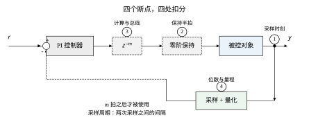
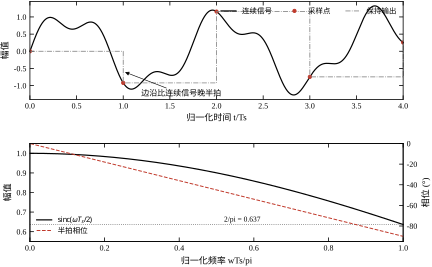
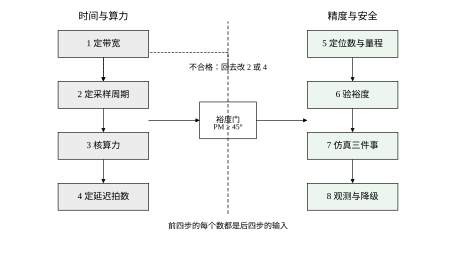
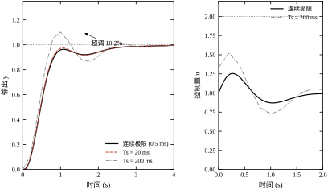
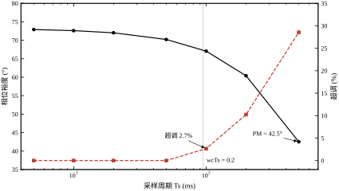
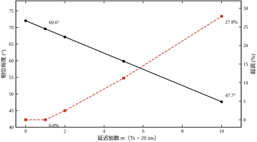
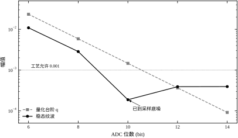
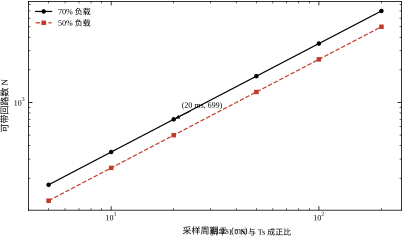
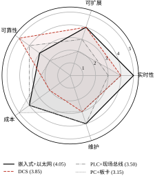

把控制器从模拟电路换成一台计算机，看起来只是“换了个实现方式”，实际上换掉了控制回路里最敏感的一件事：信息不再是连续流动的，而是被切成一片一片处理的。这一章要做的，就是把“切片”带来的四个后果讲清楚，并且每一项都给出可比的数字。
图 84-1 是一个最朴素的计算机控制回路。左半边是经典的部分：给定值、控制器、执行器、对象、传感器。右半边是这台计算机实际做的事，只有三个动作：
三个动作对应三个物理事实：采样是时间上的离散，读数是幅值上的离散（ADC 位数有限），保持是零阶保持（一个台阶内输出恒定）。再往工程里走，还要加上第四个事实：算和保之间有一段延迟，因为程序要跑、总线要传。
这四个事实就是本章的全部内容。听起来简单，但它们的后果并不简单：同样的 PI 参数，在一个 5 ms 采样的系统上相位裕度 72.9°，换到 500 ms 采样就只剩 42.5°，超调从 0 涨到 28.5%（§84.5 的实测）。参数没变，稳定性变了——这是模拟控制里不会出现的事。
教科书里常见一种说法：先在连续域设计好控制器，再用某种离散化方法（前向差分、后向差分、双线性变换）把它变成代码。这条路能走通，但它掩盖了三件事。
第一，离散化方法本身会改变闭环。双线性变换把 s 平面左半平面映到 z 平面单位圆内，稳定性保住了，但频率轴的映射是非线性的（频率畸变），在 \omega T_s 接近 \pi 的地方误差很大。后向差分则把稳定域压得更小，高频段相位额外滞后。选哪种，取决于你的 \omega_c T_s 有多大，而不是取决于哪种“更精确”。
第二，采样周期不是数值精度问题，而是稳定性问题。很多人以为 T_s 只要“足够小”就行，实际上 T_s 直接吃掉相位裕度，而相位裕度直接决定超调。本章的基准对象（三个 0.2 s 时间常数串联）在 T_s=5 ms 时裕度 72.9°，T_s=100 ms 时 67.1°，T_s=500 ms 时 42.5°。前两档你还看不出差别，第三档已经是一个“能跑但不好”的回路了。
第三，计算机带来的不只是离散，还有“非理想”。ADC 有位数、DAC 有位数、晶振有偏差、总线有时延、任务调度有抖动。这些在连续域模型里统统不存在，但在现场，它们往往是“仿真很好、上机不行”的真正原因。
所以本章的组织方式是：先把离散化讲透（§84.2–§84.6），再把工程上的非理想逐项量化（§84.7–§84.10），最后给一张可以照着走的选型与验收清单（§84.10–§84.11）。不追求把每种结构都讲一遍，而是把“计算机”这三个字带来的共性讲清楚。
工业界把计算机控制分成四代，名字很多，主线只有一条：计算能力离对象越来越近，或者离人越来越远。
四代不是替代关系，而是同一件事在不同规模下的不同切法。你在一个小设备上做 DDC，在一条产线上做 DCS，在一个车间里做 FCS，底层要算的东西是同一套：采样周期、延迟、位数、抖动。这也是为什么本章不按“四代”分节，而是按“四件事”分节。
在展开之前，先给一个能记住的对比。本章的基准对象是 G(s)=1/(0.2s+1)^3，控制器是 K_p=1.0、T_i=0.6 s 的 PI。同一组参数，只改采样周期，结果见表 84-1：
表 84-1 同一组 PI 参数、不同采样周期下的闭环指标
| 采样周期 | 相位裕度 | 超调 | IAE |
|---|---|---|---|
| 5 ms | 72.9° | 0.0% | 0.5996 |
| 50 ms | 70.2° | 0.0% | 0.5995 |
| 200 ms | 60.4° | 10.2% | 0.6759 |
| 500 ms | 42.5° | 28.5% | 1.0284 |
这张表说明两件事。第一，“够用”的采样周期比想象中宽：从 5 ms 放松到 50 ms，指标几乎不动（IAE 只差 1e-4）。第二，“不够用”是突然发生的：50 ms 到 500 ms 只差十倍，超调从 0 跳到 28.5%。中间没有平滑过渡，因为在 100–200 ms 附近，采样引入的相位滞后刚好把裕度吃到了临界区。
工程上的经验法则“每周期采 5–10 次”就是从这里来的：T_s 要小到 \omega_c T_s\le 0.3 左右。本章基准的 \omega_c\approx2.1 rad/s，0.3/\omega_c\approx140 ms，与表里“100 ms 开始变差”完全对得上。这条法则不是玄学，它是相位账的直接推论（§84.6 会把账算细）。
这一章是“概述”，所以有三件事只点到不展开：
反过来，本章有两件事是后面几章都要用的：采样周期的相位账（§84.6）与误差预算的算法（§84.10）。第 85 章讲数字控制系统的结构，第 86 章讲实时软件，都要回到这两件工具上。
在展开之前先把三个最常见的误解摆出来，它们每一个都能用本章的数字驳倒。
误解一：“采样周期满足香农定理就行。” 香农定理管的是“信号能不能被无失真重构”，要求 T_s<1/(2f_{\max})。本章的闭环带宽 2.1 rad/s，对应 0.34 Hz，香农要求 T_s<1.5 s——按这个标准，1 s 采样都“合格”。但实测 T_s=500 ms 时超调 28.5%（表 84-4）。两个标准的差距是 75 倍：香农管的是“看得见”，控制要的是“来得及”。工程上用的 \omega_cT_s\le0.3 就是“来得及”的量化。
误解二：“位数越高，精度越高。” 表 84-10 里 10 bit 的纹波 1.88\times10^{-4}，12 bit 反而 3.92\times10^{-4}。位数只决定“台阶多细”，不决定“回路稳不稳”。真正的精度上限由量程、噪声、极限环共同决定，三者里最差的那个说了算。买 24 bit 的采集卡配一个 5% 精度的传感器，得到的还是 5%。
误解三：“换成计算机就能上先进控制。” 本章反复说明：计算机带来的第一件事是采样、延迟、量化，这三项都在吃裕度；先进控制（MPC、自适应）要在裕度够用的前提下才有意义。基础回路 PM 只有 30° 时，上一套 MPC，模型稍微偏一点就发散——先进控制放大的是模型质量，不是弥补模型缺陷。这也是为什么 DCS 项目里，投先进控制之前总要先做一轮“基础控制整定”（PID 重新整定 + 回路投自动率提升）。
这三个误解有共同的结构：都把“计算机”当成一个纯粹的增益项（更快、更准、更强），而忽略了它同时是一个损耗项（延迟、量化、集中风险）。本章的写法就是把损耗项逐项算出来，让读者在“要不要上、上到什么程度”这个问题上有数可依。
图 84-1 计算机控制回路的四个断点。左侧是连续域，右侧是计算机内部；采样、量化、保持、延迟四处是本章要逐项量化的地方。

这一章的结构和前面几章不太一样，读法也要跟着变。
第一遍读 §84.1 与 §84.5。前者给四个断点的直觉，后者给一张“同一组参数、不同采样周期”的全扫描表。这两节读完，你已经知道“计算机进入回路会发生什么”，后面的公式都是给这件事补细节。
第二遍读 §84.2 与 §84.6。这两节是“账本”：式 (84-9) 是相位账，式 (84-17) 是位数账，式 (84-18) 是延迟账。账本本身不好看，但后面每一张表都是它的一个特例。读的时候不必背公式，记住三件事就够：半拍是固定税、每拍延迟是累进税、位数决定台阶。
第三遍读 §84.7 到 §84.10。这四节是“怎么用”：参数意义、调参顺序、优化手段、工程落地。它们的特点是结论都以“该取多少”的形式给出，而不是“原理是什么”。如果你只想解决一个现场问题，从这里翻起最快。
§84.11 与 §84.12 可以最后读。前者是边界（什么时候不该用），后者是代码（数字怎么来的）。代码那一节不是给初学者看的，是给“想复现或想改一个参数看看”的人看的。
还有一条建议：读的时候手边放一个计算器。本章几乎所有结论都可以用四则运算复核，例如“\omega_cT_s=2.13\times0.02=0.043”“延迟裕度 =69.6/2.44\approx28.5 拍”“10 bit 台阶 =3/1024\approx2.9 mV”。凡是能心算的地方都动手算一遍，比记住结论有用——因为现场的数字和书里不一样，会算才能迁移。
这一节只做一件事：把 §84.1 说的四个断点写成可以算的式子。式子不多，但每一个后面都要用到，所以每个都给一句“它到底在说什么”。
设连续对象为 G(s)，采样周期 T_s，则零阶保持（ZOH）的等效传递函数为
G_h(s)=\frac{1-e^{-sT_s}}{s}. \tag{84-1}
它与对象串联后的频率响应是 G_h(j\omega)G(j\omega)。把 G_h 写成幅相形式：
G_h(j\omega)=\frac{1-e^{-j\omega T_s}}{j\omega}=T_s\,e^{-j\omega T_s/2}\,\frac{\sin(\omega T_s/2)}{\omega T_s/2}. \tag{84-2}
这个式子包含两条信息，缺一不可：
第一条常被忽略，第二条常被当成全部。实际上在 \omega_c T_s\le0.3 的常用区间里，\mathrm{sinc} 的衰减只有 0.4%，可以忽略；而半拍相位是 0.15 rad，约 8.6°，不能忽略。这就是为什么“采样周期选得够小”这件事，判据是相位而不是幅值。
式 (84-2) 的推导只有两步，值得看一眼，因为它解释了两个常见错误。先把分子因式分解： 1-e^{-j\omega T_s}=e^{-j\omega T_s/2}\left(e^{j\omega T_s/2}-e^{-j\omega T_s/2}\right)=e^{-j\omega T_s/2}\cdot 2j\sin\frac{\omega T_s}{2}, 再除以 j\omega，就是 T_s e^{-j\omega T_s/2}\cdot\mathrm{sinc}(\omega T_s/2)。半拍相位与 \mathrm{sinc} 衰减是同一个因式分解的两半，不是两个独立的现象——这一点常被写错成“ZOH 有一拍延迟加一个 sinc”，那是把半拍说成了一拍，会让相位估计差一倍。
两个常见错误都与这个推导有关。一是把 ZOH 的延迟算成“一拍”，于是按预算反解出的 T_s 会放宽一倍，实际相位超额一倍——半拍与一拍在预算表里差 50%，是能压垮一个回路的差别。二是以为 \mathrm{sinc} 衰减会“吃掉增益”，于是把 K_p 调大补偿——在 \omega_cT_s\le0.3 时这个衰减只有 0.4%，补偿它等于凭空加 0.4% 增益，而真正的损失在相位上，加增益只会让裕度更差。
对 G(s) 做精确 ZOH 离散化：
x_{k+1}=A_d x_k+B_d u_k,\qquad y_k=C x_k, \tag{84-3}
其中
A_d=e^{AT_s},\qquad B_d=\int_0^{T_s}e^{A\tau}B\,d\tau. \tag{84-4}
B_d 的积分不必真做，用增广矩阵一次算完：
\exp\left(\begin{bmatrix}A&B\\0&0\end{bmatrix}T_s\right)=\begin{bmatrix}A_d&B_d\\0&I\end{bmatrix}. \tag{84-5}
这条技巧值得记住：它把“积分”变成了“一次矩阵指数”，代码只有五行，还避免了数值积分在 T_s 很小时的累积误差。
控制器这边，本章用后向欧拉积分的 PI：
u_k=K_p e_k+\frac{K_p T_s}{T_i}\sum_{j=0}^{k}e_j, \tag{84-6}
对应的 z 传递函数是
C(z)=K_p+\frac{K_pT_s}{T_i}\cdot\frac{z}{z-1}. \tag{84-7}
注意 z/(z-1) 而不是 1/(z-1)：后向欧拉把积分写成“当前误差累加”，在 z 域里就是 z/(z-1)。这两者的差别在低频可以忽略，在高频是一个整拍的相位差，写代码时对不上就会出现“仿真与实测差半拍”的怪现象。
计算延迟是最简单的一项：延迟 m 拍就是乘 z^{-m}，相位滞后
\Delta\varphi_{\text{delay}}=m\omega T_s. \tag{84-8}
把半拍保持也算进去，得到本章反复使用的那条工程近似：
\Delta\varphi\approx\omega_cT_s\left(m+\tfrac12\right). \tag{84-9}
它的意思是：每一个采样周期，无论你算得多快，都要交半拍的“税”；每多一拍延迟，再交一整拍。本章实测这条近似偏保守 1.2°（§84.6 表 84-7），用于估算足够了。
采样抖动是采样时刻的随机偏移。设抖动标准差为 \sigma_t，则采样值的误差一阶近似为
\delta y\approx \dot y(t_k)\,\delta t_k, \tag{84-10}
即误差正比于信号斜率。这解释了一个常见困惑：抖动对慢变信号几乎无影响，对快速跳变影响很大。本章基准对象的时间常数 0.2 s，T_s=20 ms，抖动到 50% T_s 也只让 IAE 动到小数第四位（§84.8 表 84-11），原因就是斜率小。
量化的台阶是
q=\frac{\text{满量程}}{2^{n}}, \tag{84-11}
理想 ADC 的信噪比约 6.02n+1.76 dB。但控制器关心的不是 SNR，而是“这个台阶会不会引起极限环”。判据很粗：若 q 小于稳态误差允许值的 1/3，量化就不会主导纹波。本章 10 bit（q=1.46\times10^{-3}）时纹波 1.88\times10^{-4}，已经到了采样本身的底噪，再加位数没有意义（§84.8 表 84-10）。
离散闭环的误差传递函数为
E(z)=\frac{1}{1+C(z)G(z)z^{-m}}R(z). \tag{84-12}
本章用三个指标评价它：
三个指标各有盲区：PM 看不出稳态精度，IAE 被初始段主导，纹波看不出快速性。所以本章的每张表都给两到三个，不单独用一个数下结论。
还有一个容易忽略的细节：IAE 的定义里带 T_s。同一个误差轨迹，T_s 减半、采样点翻倍，\sum|e_k|T_s 仍然收敛到同一个积分——这是它作为“指标”而不是“求和”的原因。若代码里写成 np.sum(abs(e)) 不带 T_s，比较不同采样周期时就会得出“采样越快 IAE 越大一倍”的荒谬结论。本章脚本写的是 np.sum(np.abs(sp - y)) * ts，所以 5 ms 与 20 ms 的 IAE 都是 0.5996，可以直接横向比较。
纹波的定义也有同样的陷阱：它是“末段 20% 时间窗内输出的标准差”，不带 T_s；因为标准差本身就是统计量，与采样点数的关系已经包含在“样本数”里。但时间窗必须按总时长取——本章所有算例的 t_end 都是 6 s，所以脚本里按点数取末 20%（y_arr[int(0.8*len(y_arr)):]）与按时长取等价；如果哪天改了某个算例的 t_end 却没改采样点数，窗就不一样长，早期过渡过程会混进去，纹波被算得虚高。
一个自然的疑问：既然 \omega_c T_s 很小，为什么不直接在 s 域里加一个 e^{-sT_s} 的延迟项，非要用 z 变换？
答案是延迟在 s 域里不是有理函数。e^{-sT_s} 无法写成有限阶多项式之比，所以画根轨迹、算极点、做极点配置这些工具全用不上。z 域把 e^{-sT_s} 变成 z^{-1}，一个有理的、有限维的算子，所有线性系统工具立刻可用。
代价是 z 域的频率轴被“卷”了一圈：s 平面的虚轴（-\infty 到 +\infty）映到 z 平面的单位圆（-\pi/T_s 到 +\pi/T_s），而且映射是非线性的。所以 z 域的“频率”只在 [0,\pi/T_s] 内有意义，超过奈奎斯特的频率会折叠回来，看起来像低频。这不是数学游戏，它是真实存在的混叠，也是采样前必须加抗混叠滤波器的原因。
图 84-2 给出 ZOH 的时域波形与频域幅相：上半是“连续信号—采样点—保持台阶”三层对照，下半是 \mathrm{sinc} 幅频与半拍相位。看这张图时注意一件事：保持台阶的边沿永远比连续信号晚半拍，这半拍就是式 (84-2) 里那一项，它不随采样率提高而消失，只随 T_s 变小而变小。

量化误差 \varepsilon=Q(y)-y 有两种看法，用错了会得出相反的结论。
统计模型：把 \varepsilon 看作与信号无关的均匀白噪声，落在 [-q/2,q/2] 内，方差
\sigma_q^2=\frac{q^2}{12}. \tag{84-13}
这个模型在信号“足够乱”、一次采样跨过很多台阶时成立。用它估纹波，就是把 \sigma_q 送进闭环的某一段传递函数，看被衰减多少。位数每加 1 bit，q 减半，纹波按 \sqrt{1/2} 下降——这是一个单调的、可预测的关系。
确定性模型：\varepsilon 是信号的确定性函数，随 y 周期性地重复。当信号很规矩（恒定给定、稳态、缓慢漂移）时，\varepsilon 会锁在一个固定图案上，产生极限环——输出持续小幅振荡，不衰减。
关键在于：稳态恰恰是第二种模型成立的地方。所以“按白噪声算出来纹波很小”不能保证稳态不振荡。本章 [4] 的表 84-10 就是这个现象：10 bit 纹波 1.88\times10^{-4}，12 bit 反而 3.92\times10^{-4}。按统计模型，位数加多纹波必须下降；实测违背，说明稳态下起作用的不是噪声强度，而是极限环的有无。
极限环什么时候出现？用描述函数看最清楚。理想量化器对正弦输入的描述函数 N(A) 满足 N(A)\le1（幅度越小，等效增益越低）。自持振荡要求环路满足 L(j\omega)N(A)=-1，也就是
|L(j\omega)|=\frac{1}{N(A)}\ge1,\qquad \angle L(j\omega)=-180°. \tag{84-14}
两个条件必须同时满足：相位到位，且增益不小于 1。这条判据给出两个实用推论：
这解释了一个现场常见的困惑：同一个控制器，换了一块精度更高的采集卡，纹波反而变大了。不是卡坏了，是原来那个粗量化的“死区”恰好把极限环卡死了；换了细量化，死区消失，极限环的条件重新满足。遇到这种情况，正确做法不是换回粗卡，而是把裕度做大一点，或者给积分器加一个很小的死区。
本章的公式里反复出现 z 的几个特殊取值，把它们一次记牢，后面看图看表会快很多：
最后一条值得多说一句。本章基准在 T_s=20 ms 时闭环极点模约 0.99966，T_s=500 ms 时约 0.736。后者离单位圆更远，看起来“更稳”，但它的超调是 28.5%——极点模混进了时间尺度，单独看会误判。判断稳不稳要看模是否小于 1，判断好不好要看相位裕度与超调。
这一节给一条可执行的设计流程。它不假设你先有连续域控制器，而是从需求出发，每一步都有明确的输出物和判据。流程见图 84-3。
先算对象的“最快时间常数” \tau_{\min}，再算期望闭环带宽 \omega_c。若无特殊要求，取 \omega_c\approx1/\tau_{\min} 到 3/\tau_{\min} 之间；有快速性要求时才往上取。
本章基准对象三级串联，每级 0.2 s，\tau_{\min}=0.2 s。取 \omega_c\approx2.1 rad/s（约 1/\tau_{\min} 附近），实测确实落在 2.1 rad/s。这一步的输出是一个数：\omega_c。后面所有选择都由它派生。
为什么区间是 1/\tau_{\min} 到 3/\tau_{\min}，而不是别的？下限来自“要管得住”：\omega_c 低于 1/\tau_{\min}，闭环比对象自身还慢，扰动要过好几个时间常数才被压回去，调节时间会拖到十几秒量级。上限来自“相位不够”：一个惯性环节在 \omega=1/\tau 处贡献 -45°，到 3/\tau 处已经贡献 -71.6°。本章是三阶串联，三段相位叠加，\omega_c=3/\tau_{\min}=15 rad/s 时对象相位是 -3\arctan(3)=-215°，早就越过 -180°，无论怎么调 K_p 都稳不住。所以阶数越高，\omega_c 越只能往下限取。单阶对象可以取到 3/\tau，三阶对象只能取到 1/\tau 附近，这就是“对象阶数决定带宽上限”的定量含义。
如果工艺指标给的是调节时间而不是带宽，可以反推：进 \pm2\% 带的调节时间 t_s\approx3/\omega_c，进 \pm5\% 带约 2.2/\omega_c。要求 t_s<2 s，就要求 \omega_c>1.5 rad/s；本章取 2.1，留了 40% 余量。反推出来的数要和“1/\tau_{\min} 到 3/\tau_{\min}”取交集，两者冲突时以工艺指标为准，但要回头检查对象能不能支撑——若工艺要求 \omega_c=10 rad/s 而对象是三阶 0.2 s，这个指标在物理上就达不到，需要改对象（加大执行器、减小惯量）而不是改控制器。
用式 (84-9) 反解。给定允许的相位损失 \Delta\varphi_{\max}（一般取 5°–10°）与预估延迟 m：
T_s\le\frac{\Delta\varphi_{\max}}{\omega_c(m+1/2)}. \tag{84-15}
代入 \omega_c=2.1 rad/s、m=1、\Delta\varphi_{\max}=8°=0.14 rad，得 T_s\le0.044 s。本章取 T_s=20 ms，落在范围内。实测 T_s=20 ms、m=0 时相位裕度 72.0°，比 5 ms 的 72.9° 只低 0.9°；而式 (84-9) 在 m=0 给出 1.2°，估计与实测同量级且略保守。
这一步的输出是一个数：T_s。注意它是上限，不是精确值；工程上还要向“可用晶振分频”取整（§84.8）。
\Delta\varphi_{\max} 为什么取 5°–10°？因为它花的是相位裕度的存款，而这笔存款本来就不多。本章 PM=72.9°，看起来富裕，但其中要留给对象参数变化（\pm30\% 的 \tau 变化实测吃掉 11°，见表 84-8）、留给增益整定误差、还要留出“现场工况比设计点恶劣”的余量。经验分配是：采样与延迟合计不超过 10°，对象与整定误差各留 15°，剩下的才是真正的安全垫。反过来算一次就清楚：若某条现场总线的周期被固定成 100 ms，m=1，则 \Delta\varphi=2.1\times0.1\times1.5=0.32 rad =18.3°，一把就把采样这一项的额度用超了一倍——这就是“用现场总线做闭环必须核对周期”的原因。表 84-6 的实测也支持这个量级：20 ms 下 5 拍延迟（相当于 100 ms）掉 10.2°。
另一个容易被忽略的细节：式 (84-15) 里的 T_s 出现在等式两边，因为 m 本身是延迟秒数除以 T_s 再取整。所以严格做法是迭代：先猜一个 T_s，算出 m，再代回检查 T_s 是否满足判据，不满足就往下调。本章 20 ms 一次就过，是因为延迟总量 15.3 ms 小于一个周期，m=1 稳定不变；如果延迟总量在 20–40 ms 之间，T_s 从 40 ms 缩到 25 ms 会让 m 从 1 跳到 2，反而更糟——这不是连续函数，缩周期不一定改善裕度，只能靠逐点验算（表 84-6 就是这么扫出来的）。
给定 T_s，算出每拍允许的计算时间：若 CPU 负载上限取 70%，则
t_{\text{loop}}\le\frac{0.70\,T_s}{N}, \tag{84-16}
N 是回路数。本章每回路 20 μs，T_s=20 ms 时单回路占用 0.1%，70% 负载可带 699 个回路（表 84-12）。这一步的输出是一个数：单回路预算 t_{\text{loop}}。
如果算下来不够，只有三条路：换更快的 CPU、减少回路数、放大 T_s。三条路都会伤到别的东西，所以这一步要和第二步一起迭代。
式 (84-16) 里的 0.70 有两层含义，别混。第一层是平均值：一个 20 ms 周期里，CPU 用 14 ms 算控制、剩 6 ms 干别的（通信、显示、日志、自检）；第二层是峰值：某些周期的计算量会突然变大（报警刷屏、历史存盘、通信重传），峰值负载要留到 85% 以内，否则会出现“偶尔丢一拍”。丢一拍的后果等价于 m 临时加 1——按表 84-6，20 ms 下多一拍掉 2.4°、多五拍掉 10.2°，所以偶发丢拍不是“偶尔卡一下”，而是相位裕度的随机抖动。
还有一个更隐蔽的成本：每拍的固定开销与回路数无关。任务切换、时钟读取、I/O 扫描、看门狗喂狗，这些在每周期都要花一次，粗算 100–300 μs。回路数少时，固定开销占大头；回路数多时，N\times20\ \mus 占大头。所以容量不能简单按“70%×T_s/20 μs”线性外推：T_s=5 ms 时按式 (84-16) 算出 175 个回路，扣掉 200 μs 固定开销后只剩 (3.5-0.2)/0.02=165 个，比线性估计少 6%。表 84-12 给的是不含固定开销的乐观值，实际选型时要在这个基础上打个九折。
由稳态精度要求反推 ADC 位数：
n\ge\log_2\frac{\text{满量程}}{3\,e_{ss}}, \tag{84-17}
e_{ss} 是允许的稳态误差。若满量程 ±1.5、允许 e_{ss}=5\times10^{-3}，则 n\ge\log_2(1.5/0.015)=\log_2 100\approx6.6，取 8 bit 有余量。本章实测 8 bit 纹波 2.85\times10^{-3}，10 bit 降到 1.88\times10^{-4}，12 bit 以后不再改善——这就是“位数够用”的实证（表 84-10）。
DAC 位数一般比 ADC 少 1–2 位即可，因为执行器本身有死区与摩擦，多出的分辨率会被机械吃掉。
式 (84-17) 里的 3 不是精确系数，是“量化台阶只占误差预算三分之一”的工程约定。为什么是三分之一而不是二分之一？因为稳态误差还有另外两个来源：传感器噪声与变送器线性度（通常各占 1/3 量级）。三者按功率相加，量化占 1/3 时它只贡献总方差的 11%，再多给位数就是给一个不占主导的因素花钱。按这个规则，q\le e_{ss} 就够（占了 1 份中的 1 份），但那样量化会主导纹波，实测就是 8 bit 的 2.85\times10^{-3} 比要求的 5\times10^{-3} 小不了多少，已经贴近底线。
量程的选择也会偷走有效位数。满量程 ±1.5 而信号只在 ±0.8 内活动，等于白扔了将近 1 bit（\log_2(1.5/0.8)=0.9）。工程做法是量程取最大工作值的 1.2–1.5 倍：既留出过冲余量，又不至于浪费分辨率。反过来，量程压得太紧，一次超调就把 ADC 顶到满码，读数饱和——这比量化误差严重得多，因为控制器看到的是一个“假的稳态”。
另外要区分标称位数与有效位数（ENOB）。12 bit 的采集卡，若噪声有效值有 2 个 LSB，ENOB 只有 10.5 bit，按 12 bit 设计余量会落空。选型时看数据手册的噪声指标，不要只看分辨率。本章表 84-10 里 12 bit 与 14 bit 的纹波几乎一样（3.92 与 3.94\times10^{-4}），原因就是纹波已经碰到了采样与延迟的底噪，再加位数没有收益——位数只解决“看得细”，不解决“看得快”。
把回路里所有延迟列出来，折算成拍数：
m=\left\lceil\frac{\tau_{\text{sense}}+\tau_{\text{compute}}+\tau_{\text{bus}}+\tau_{\text{act}}}{T_s}\right\rceil. \tag{84-18}
四项分别是传感器转换、程序执行、总线传输、执行器响应。本章只保留 m=1 拍，实测相位裕度 69.6°，比 m=0 低 2.4°，与式 (84-9) 估的 3.7° 同量级。
这一步的输出是一个整数：m。它必须向上取整——半拍延迟在数字系统里不存在，要么这一拍算完，要么等下一拍。
四项延迟的典型量级差得很远，值得单独记一下，以免把力气花错地方：传感器转换 1–20 ms（取决于滤波常数与 \Sigma\Delta 采样率）、程序执行 10–200 μs、总线传输 1–20 ms（取决于站数与速率，见表 84-13）、执行器响应 5–50 ms（气动阀门定位器是重灾区）。执行器与总线两项通常占了总量的九成，而它们又恰恰是控制工程师最不愿意碰的部分。所以延迟优化的正确顺序是：先挑快阀（或改液压）、再提总线速率、最后才是优化程序——把 20 μs 的程序优化到 10 μs，总量从 15.3 ms 变成 15.29 ms，一点用处也没有。
向上取整这条规则还有一个副作用：m 对延迟总量是阶梯函数。总量 15.3 ms、周期 20 ms 时 m=1；总量变成 20.1 ms，m 立刻跳到 2。中间那 4.7 ms 的余量不是“缓冲”，而是“悬崖边的空地”——它不改善任何指标，只是在延迟涨到 20 ms 之前不会突然掉档。工程上把这个余量控制在周期的 20%–30% 比较合适：太小，现场一个参数改动就掉档；太大，说明周期选得过于保守，白白牺牲了抗扰速度。
顺带说清一个常被问的问题：延迟能不能靠“算得快”补回来？不能。m 是整数拍，程序从 200 μs 优化到 20 μs，只要仍在同一拍内完成，m 不变，裕度一点不变。这也是为什么本章把“计算量”与“延迟”分成两步来处理：前者决定 CPU 选型，后者决定 T_s 与架构，两者只在“周期边界”这一个点上耦合。
把 T_s、m、控制器参数代进 L(z)=C(z)G(z)z^{-m}，算 \omega_c 与 PM。判据：
本章 T_s=20 ms、m=1 时 PM=69.6°，落在“良好”区。同一组参数把 m 加到 10 拍，PM 掉到 47.7°，超调 27.8%——延迟十拍就把一个良好的回路变成了勉强能用的回路。
这三个门槛（45°/60°）来自二阶系统的经验换算：PM 与阻尼比 \zeta 近似有 \zeta\approx PM/100，PM=45° 对应 \zeta\approx0.45、超调约 20%；PM=60° 对应 \zeta\approx0.6、超调约 10%。本章的实测比这个换算乐观：PM=69.6° 时超调 0.0%，PM=47.7° 时超调 27.8%。偏差的原因是对象是三阶、且 PI 的零点把相位往上抬了一截，二阶换算只是量级参考，不能当精确预测。
所以第六步的正确用法是“先看裕度卡门，再靠仿真定数”：裕度低于 45° 一定不合格，不必再仿真；裕度高于 60° 大概率合格，但仍要跑一次确认超调；落在 45°–60° 之间必须仿真。这样做的好处是把昂贵的仿真留给真正需要的算例，而日常检查只花一次频响计算的时间（本章脚本里 margins() 跑一次不到 10 ms）。
仿真不是“跑一遍看看曲线漂不漂亮”，而是验三件事：
第三件最容易被跳过。本章的仿真里保留了执行器饱和（\pm2），就是为了让“积分饱和”这类问题在仿真里先暴露，而不是在现场。
三件事的验证方式不一样，别混成一件。第一件用阶跃，看的是指标，判据是数值（上升、超调、IAE）；第二件用长时间恒定给定，看的是末段 20% 时间窗的纹波，判据是比较量级（本章 10 bit 时 1.88\times10^{-4}，对比工艺允许的 10^{-3}）；第三件用故障注入，看的是退出行为，判据是有没有超限。第三件本章脚本只做了饱和一项，另外两项（给定值超量程、传感器断线）要自己改脚本，改法很简单：把 sp 改到 2.5、把 ADC 读数在某个时刻固定成 0。
仿真验证有一条纪律：仿真里必须包含“你在现场一定会遇到的那几项不理想”。本章的脚本默认开了延迟 m=1、执行器饱和、可选量化，这三项都不是“锦上添花”，而是决定结论对不对的前提。一个只含理想连续对象的仿真，跑出来的曲线再漂亮也不能用于选型——它验证的是“数学对不对”，不是“这台机器行不行”。
最后一步不是算法，是工程：控制器必须能记录每个周期的给定、反馈、输出、计算耗时，必须能降级（上位机断线时保持或切手动）。这两件事在算法设计阶段就要留接口，事后加会推翻整个时序。
为什么是“事后加会推翻时序”？因为记录与降级都要占时间预算。每周期写一条 64 字节的记录，按 20 ms 周期算，一小时是 11 MB，若同步写 flash 会阻塞 5–20 ms，直接把 m 顶到 2 拍。所以正确做法是环形缓冲 + 异步落盘：中断里只把数据塞进内存环，后台任务慢慢写盘，中断里花的只是几十微秒的拷贝。这个设计必须在第三步划分时间预算时就把份额预留出来，等程序写完再补，往往只能砍掉记录精度。
降级同理。上位机断线时要“保持最后输出”，意味着控制器要有一个状态机（自动/手动/保持/故障），每个周期都要检查通信心跳。心跳超时阈值取 3–5 个通信周期：太短会误切，太长则断线后还在用过期数据控制——用过期数据控制比切手动更危险，因为它看起来一切正常。
§84.10 会给一份验收清单，把这一步拆成可勾选的条目。这里只强调一句：计算机控制系统的失败，多数不是算法错，而是“看不到、退不出”。
图 84-3 计算机控制器的八步设计流程。左侧四步定“时间与算力”，右侧四步定“精度与安全”，中间用裕度验算卡一道门。

上面的八步单独看都对，连起来走一遍才知道每一步的输入从哪来。这一小节用本章的基准对象，从一条工艺指标出发，把八个步骤的算术全部写出来。
给定的工艺指标：阶跃给定下调节时间（进 \pm2\% 带）小于 2 s，超调小于 10%，稳态纹波小于 10^{-3}；执行器量程 \pm2，传感器量程 \pm1.5。
第一步，定时间尺度。对象由三个 0.2 s 的惯性环节串联，特征频率 1/\tau=5 rad/s。三阶串联的相位在高频段累积很快，所以闭环带宽不能贴着 5 取。经验是取到 0.4/\tau\approx2 rad/s：既保证调节时间在秒级（t_r\approx2.2/\omega_c\approx1 s），又给对象相位留出余地。实测 \omega_c=2.13，与估计相符。
第二步，由相位账定 T_s。对象在 \omega_c 处的相位是 -3\arctan(0.2\times2.13)=-68.6°，相对 -135° 的额度是 66.4°。按式 (84-25)，m=1 时
T_s\le\frac{66.4\times\pi/180}{2.13\times1.5}=0.29\ \text{s}.
相位账允许 290 ms，为什么最后取 20 ms？因为相位账只回答“稳不稳”，不回答“抗扰快不快”。工艺要求调节时间小于 2 s，而扰动抑制的速度大致与 T_s 同量级——20 ms 的周期意味着扰动最迟 20 ms 被发现，290 ms 意味着最迟 290 ms。取 20 ms 是用裕度换抗扰速度，这一步是设计选择，不是公式推导。这一步的教训值得单列：相位账给的是上界，实际取值由工艺指标定，两者之间往往差一个数量级。
第三步，核算力。每回路 20 μs，20 ms 周期，单回路占 CPU 的 20\,\mu\text{s}/20\,\text{ms}=0.1\%。本章表 84-12 给的 699 回路是“70% 负载”的上限，本算例只用 0.1%，远未受限。
第四步，定位数。要求纹波小于 10^{-3}，按式 (84-17)：
n\ge\log_2\frac{3.0}{3\times10^{-3}}=\log_2 1000=9.97,
取 10 bit。实跑纹波 1.88\times10^{-4}，比要求的 10^{-3} 还小五倍，说明这个判据偏保守——保守是对的，因为现场还有噪声。
第五步，算延迟预算。逐项列：
表 84-2 一个回路的延迟预算（T_s=20 ms）
| 环节 | 耗时 | 说明 |
|---|---|---|
| 传感器转换 | 1 ms | 变送器滤波 |
| 总线传输 | 5.3 ms | 32 站、1 Mbit/s，表 84-13 |
| 控制器计算 | 0.02 ms | 20 μs |
| 执行器动作 | 9 ms | 阀门定位器 |
| 合计 | 15.3 ms |
按式 (84-18)，m=\lceil15.3/20\rceil=1 拍。这个结果贴着边界：15.3 ms 已经占了 20 ms 周期的 77%，只要总线再加 5 ms 或者阀门慢一点，m 就跳到 2 拍，PM 从 69.6° 掉到 67.2°。所以工程上要么把周期放到 40 ms（m 仍为 1，但余量翻倍），要么把总线速率提到 5 Mbit/s（5.3 ms 降到 1.2 ms）。
第六步，验裕度。m=1 时 PM=69.6°，落在“良好”区（\ge60°）；实测超调 0.0%、调节时间 0.8 s，两项都满足工艺指标。
第七步，仿真三件事。阶跃已验证；加上 10 bit 量化后纹波 1.88\times10^{-4}，满足；把给定值从 1.0 改到 2.5（超过执行器量程 2.0）跑一次，观察积分饱和退出的时间——这一项本章的脚本没跑，属于上机前必须补的验证。
第八步，留观测与降级。记录每周期的 (r,y,u,t_{\text{cpu}})；上位机断线时保持最后输出并报警；执行器反馈与指令偏差超过 5% 持续 2 s 则切手动。这三条要写进需求，不能等到调试时再加。
走完一遍可以看出：八步里只有第二、四、五步是“算”，其余五步是“选”与“留”。算的部分本章给了公式与数字，选的部分要靠工艺指标与现场条件，留的部分是软件架构。这也解释了为什么同一个对象，不同项目算出来的 T_s 能差十倍——不是谁算错了，是“选”的部分不同。
连续情形是后面所有比较的基准。这一节把它算清楚，目的不是“讲连续控制”，而是给离散情形一个可对照的起点。
本章基准对象 G(s)=1/(0.2s+1)^3，控制器 C(s)=K_p(1+1/(T_i s))，K_p=1.0、T_i=0.6 s。三个关键数：
这三个数是互相牵连的。\omega_c 由“开环增益为 1”定，PM 由“\omega_c 处的相位”定，t_r 大致是 2.2/\omega_c 的量级（这里是 1.04 s，实测 0.82 s，因为三阶系统不是标准二阶）。改动任何一个参数，三个数一起动。
把这三个数手算一遍，比看结果有用。对象在 \omega_c=2.108 处的幅值是 |G|=\frac{1}{(1+(0.2\times2.108)^2)^{3/2}}=\frac{1}{(1.1777)^{3/2}}=0.782, 控制器要把它补到 1，所以 |C|=1.28。PI 在 \omega_c 处的幅值是 K_p\sqrt{1+1/(T_i\omega_c)^2}=1.0\times\sqrt{1+1/(0.6\times2.108)^2}=1.28——两个数对上，说明这组参数就是按“\omega_c=2.1、|C| 补足”设计出来的。相位这边，对象贡献 -3\arctan(0.42)=-68.6°，PI 贡献 -\arctan(1/(0.6\times2.108))=-38.3°，合计 -106.9°，离 -180° 还有 73.1°，与实测 72.9° 只差 0.2°。手算与仿真的这点偏差，来自 \omega_c 的数值求解精度，不是模型不一致。
整定 PI 的经典做法是“指定 \omega_c 与 PM，解出 K_p 与 T_i”。两条方程是：
\left|C(j\omega_c)G(j\omega_c)\right|=1, \tag{84-19}
\angle C(j\omega_c)+\angle G(j\omega_c)=-180°+PM. \tag{84-20}
代入 G(j\omega)=1/(1+j0.2\omega)^3，在 \omega_c=2.1 处 |G|=0.782、\angle G=-3\arctan(0.42)=-68.6°。若要求 PM=72.9°，则控制器要提供 -180+72.9+68.6=-38.5° 的相位，对应 T_i\approx0.6 s；再由幅值条件 |C|=1/0.782=1.28 得 K_p\approx1.0。这与本章用的是同一组数。
注意这两条方程里没有任何采样。连续域的解是“理想解”——它假设控制器能在任意时刻读到任意精度的值，并且瞬间算出结果。离散控制要做的，是在这个理想解上逐项扣分。
把同一个 C(s) 离散成式 (84-7) 的 C(z)，加上 ZOH 与 m 拍延迟，就得到离散开环。两项扣分见表 84-3：
表 84-3 连续解离散化后的相位扣分（T_s=20 ms，\omega_c=2.127 rad/s）
| 扣分项 | 物理来源 | 本章实测 |
|---|---|---|
| 半拍保持 + 离散化 | ZOH 的 e^{-j\omega T_s/2} 与后向欧拉的差 | -0.9° |
| 一拍延迟 | 计算 + 总线 | -2.4° |
| 合计 | -3.3° |
从 72.9° 扣到 69.6°，与实测一致。两项里延迟占七成，半拍与离散化方法本身加起来只占三成。这个排序很重要：很多讨论把注意力放在“用双线性还是后向差分”上，实际上那只是一小项；真正吃裕度的是延迟。
既然离散会掉裕度，为什么还要先做连续设计？因为连续设计给出的是上界与直觉：
所以正确的用法是：连续域定初值与目标，离散域验算与修正。反过来（先在离散域盲试参数）也能收敛，但会失去“这个参数为什么是这个值”的解释。
这条分工还有一个量化依据：本章把 T_s 从 20 ms 变到 500 ms，K_p 与 T_i 一直没动，PM 却从 72.0° 掉到 42.5°。也就是说，连续域给的参数在很宽的采样范围内都是“可用”的，只是裕度被采样吃掉了一部分。反过来，如果一上来就在 T_s=500 ms 的情况下整定，会得到一组“补偿了采样相位”的参数，这组参数换到 20 ms 上会过冲——用离散数据整定出来的参数与具体 T_s 绑死，换平台就得重调。这就是“先连续后离散”的第二个理由：可移植。
连续模型在两处会明显失真，必须警觉。
第一处是 \omega_c T_s 不再小的时候。经验阈值是 0.3。本章 T_s=500 ms 时 \omega_cT_s=1.06，已经超过 1，此时连续模型给出的 PM=72.9° 与离散实测的 42.5° 相差 30°，完全不能再用。表 84-4 里 500 ms 那一行就是这个失真的证据。
第二处是对象本身有纯滞后的时候。连续域里 e^{-\tau s} 可以用一阶或二阶 Padé 近似，但 Padé 近似在 \omega\tau 大时会引入虚假的右半平面零点，让相位看起来比实际好。本章的对象没有纯滞后，所以这一项为零；如果你的对象有 0.5 s 纯滞后，务必直接用 z^{-m} 处理，不要用 Padé 之后再离散。
图 84-4 给出连续与离散两条阶跃响应。T_s=20 ms 时两条曲线几乎重合（IAE 都是 0.5996），差别要到 T_s=200 ms 才看得出来（超调 10.2%，IAE 0.6759）。这张图的用意是：“离散化”在常用采样率下几乎是免费的，代价集中在延迟与量化上，而不是集中在“离散”这两个字上。

要理解“数字换掉了什么”，得先看清被换掉的那一方。模拟 PI 的历史形态是运放加阻容：比例通道是一个反相放大器，增益 K_p=-R_f/R_1；积分通道是运放反馈电容 C_f，时间常数 T_i=R_1C_f。两路相加，得到
u=-K_p\left(e+\frac{1}{T_i}\int e\,dt\right). \tag{84-21}
这和张卡上的记号一模一样，所以“数字 PI 就是把这个式子写成代码”听起来天经地义。但模拟电路有三处不理想，是数字实现天然没有（或者说，可以用别的方式解决）的：
integ += e*ts，累加器是精确的浮点数，只要不溢出就没有这两件事。反过来说，模拟电路也有数字比不了的地方：没有采样、没有延迟、没有量化。它的“计算”是电荷在电阻电容上的瞬时流动，带宽由运放的单位增益频率决定，可以到几十 MHz。所以本章 §84.11.3 说“带宽极高的回路别用纯数字”，根子就在这里——不是数字算不快，而是采样这件事本身有下限。
这一段还有一个实用推论：看一个老装置的 PI 参数，要按它的元件误差打折。电阻 5% 误差、电容 10% 误差，K_p 与 T_i 的真实值就可能与图纸差 10% 以上。数字改造时把这些“图纸参数”直接抄进代码，往往会发现“改完不如原来”——原来那台机器的实际参数早就被现场调过了，图纸上的数只是起点。改造前必须先做一次阶跃辨识，把实际 K_p、T_i 反算出来，这条经验在 §84.7 的参数敏感性表里有量化依据：K_p 差 30%，IAE 就差 40%。
固定控制器参数，只改采样周期，从 5 ms 扫到 500 ms，得到表 84-4。这张表是本章最重要的一张，后面很多结论都从它读出来。
表 84-4 采样周期扫描（K_p=1.0，T_i=0.6 s，无延迟）
| T_s | \omega_c (rad/s) | PM | IAE | 超调 | 上升时间 |
|---|---|---|---|---|---|
| 5 ms | 2.108 | 72.9° | 0.5996 | 0.0% | 0.820 s |
| 10 ms | 2.114 | 72.6° | 0.5996 | 0.0% | 0.820 s |
| 20 ms | 2.127 | 72.0° | 0.5996 | 0.0% | 0.800 s |
| 50 ms | 2.165 | 70.2° | 0.5995 | 0.0% | 0.800 s |
| 100 ms | 2.228 | 67.1° | 0.6105 | 2.7% | 0.800 s |
| 200 ms | 2.342 | 60.4° | 0.6759 | 10.2% | 0.800 s |
| 500 ms | 2.545 | 42.5° | 1.0284 | 28.5% | 1.000 s |
读这张表先看三件事。第一，T_s 放大了 100 倍，PM 只掉了 30°，没有出现“一放就振”的悬崖——原因是本章的对象是三阶惯性，本身相位就落后 270°，PI 的零点又补回来一截，采样与延迟只在这条已经倾斜的相位曲线上再加一点。第二，IAE 在 50 ms 以下是平的，100 ms 以后才开始涨，这个“平”是整段分析的起点，也是“采样周期不重要”这种误解的来源。第三，上升时间几乎不动，从 0.820 s 到 1.000 s，而超调从 0 涨到 28.5%——同一条曲线上的两个指标，敏感度差了一个数量级。
还要注意这一栏“无延迟”不能省。表 84-4 扫的是纯采样的影响；实际系统里采样与延迟叠加，500 ms 那一行的 42.5° 如果再加 2 拍延迟，就会掉进不稳定区（表 84-6 的趋势可以外推）。所以读扫描表时必须确认“表里固定了什么”，否则会把采样与延迟的账算重。
把表 84-4 按 \omega_cT_s 分成三段，行为完全不同。
第一段：\omega_cT_s\le0.15（T_s\le50 ms）。指标几乎不动。IAE 从 0.5996 变到 0.5995，超调一直是 0。这一段里“离散”是免费的，你可以放心用 50 ms，省下的算力去做别的事。这一段的存在是很多人低估采样周期危害的原因——他们试了 20 ms 和 50 ms，发现没差别，就以为“采样周期不重要”。
第二段：0.15<\omega_cT_s\le0.5（100–200 ms）。指标开始明显变化。100 ms 时超调 2.7%、IAE 涨 1.8%；200 ms 时超调 10.2%、IAE 涨 12.7%。这一段是“能感觉到但还能接受”的区间，也是最容易出事的区间：曲线看起来还行，但裕度已经从 72° 掉到 60°，遇到对象参数漂移就没有余量了。
第三段：\omega_cT_s>0.5（500 ms）。指标塌方。超调 28.5%、IAE 涨 71%。注意它仍然是稳定的——这是数字控制的一个陷阱：系统可以稳定但性能很差，而“稳定”这两个字会让人误以为“没问题”。
图 84-5 把这三段画在一起：横轴是 T_s（对数），左轴是 PM，右轴是超调。两条曲线的拐点几乎同时出现，位置在 100 ms 附近，正好对应 \omega_cT_s\approx0.2。这个“同时拐”不是巧合：超调是裕度的函数，裕度是 \omega_cT_s 的函数，所以两者由同一个量驱动。
图 84-5 采样周期扫描：相位裕度与超调随 T_s 的变化。虚线标出 \omega_cT_s=0.2 的位置，两条曲线在此之后同时变差。

三段的分界不必背，现场用一次小实验就能定位：把 T_s 减半跑一次阶跃。若指标几乎不变（IAE 差小于 1%），说明在第一段，还有放宽的余地；若超调明显变小（差 3% 以上），说明在第二段，当前周期已经吃掉了你的裕度；若超调减半，说明在第三段，这套参数本来就该重调。“减半试探”比查表快，因为它用的是你自己的对象和参数。
三段的划分也可以从“预算”角度理解：第一段里采样只花掉 3° 以内的相位，第二段花 6°–13°，第三段一举花掉 30°。而一个回路除 -180° 之外可用的相位通常只有 60°–70°，所以第三段的系统看起来稳定，实际上已经没有余量应对对象漂移——这与 §84.7 表 84-8 里“\tau 变大 30% 就掉 11°”是对得上的。
表 84-4 里有一个容易看漏的现象：\omega_c 从 2.108 涨到 2.545，采样越慢，交界频率越高。这看起来反直觉——采样慢了，系统应该更“迟钝”才对。
原因是离散化的幅频特性。后向欧拉的 PI 在 z 域的幅值是 |K_p+K_pT_s/T_i\cdot z/(z-1)|，在低频段它与连续 PI 一致，但在 \omega T_s 增大时，z/(z-1) 的幅值下降得比 1/(j\omega) 慢，于是控制器的有效增益变大，交界频率被推高。同时对象的离散幅频也被 ZOH 的 \mathrm{sinc} 压低。两者相抵，净效果是 \omega_c 略升。
这个现象的工程含义是：离散系统的“带宽”不能直接沿用连续域的数。你在连续域算出的 \omega_c=2.1 是一个设计目标，实际离散系统的交界频率会偏移，偏移量随 T_s 增大。验收时必须用离散开环重算，不能拿连续域的数交差。
表 84-4 里上升时间从 0.820 s 只变到 1.000 s，变化远小于超调与 IAE。原因是上升时间主要由低频增益决定，而低频段离散与连续几乎一致（式 (84-2) 在 \omega\to0 时 \mathrm{sinc}\to1、相位 \to0）。采样吃的是高频相位，高频相位影响的是阻尼（超调），不是快速性（上升时间）。
这条区分很实用：如果现场反馈“响应太慢”，先查增益与积分时间；如果反馈“过冲大、振”，先查采样周期与延迟。两类症状对应两类参数，不要混着调。
定量地说，上升时间对应的是闭环带宽（低频段），超调对应的是阻尼（中频段相位），而采样与延迟只在 \omega_c 附近及其以上才显著改变相位。本章 500 ms 时 \omega_cT_s=1.27，采样已经开始影响幅值（\mathrm{sinc}(0.64)=0.935，掉了 6.5%），上升时间才从 0.82 s 变到 1.00 s。这个 22% 的变化里，增益下降只能解释一小半，其余来自相位的二次效应——幅值掉得少、相位掉得多，正是“上升时间不敏感、超调敏感”的算术来源。
既然采样越慢越差，为什么不干脆取 1 ms 甚至更快？有三个下界。
第一是算力。每回路 20 μs 的话，1 ms 周期下一个 CPU 只能带 35 个回路（70% 负载），而 20 ms 能带 699 个（表 84-12）。回路越多，这个约束越紧。
第二是噪声。采样越快，单位时间内读到的噪声样本越多，如果反馈通道有高频噪声，快速采样会把噪声直接搬进控制量。工程上常在 ADC 前加模拟低通，其截止频率与 T_s 匹配。
第三是量化与抖动的相对影响。这一点常被忽略：T_s 越小，抖动占 T_s 的比例越大（同样的绝对抖动），而量化台阶不变。所以“越快越好”不成立，存在一个最优点。
三条下界可以用一个数串起来：每拍能花的时间。T_s=1 ms 时每拍只有 1 ms，其中固定开销 200 μs 就占了 20%，留给 100 个回路的是每回路 8 μs——这已经接近一次浮点 PID 加 I/O 读写的下限。所以“1 ms 周期带 100 个回路”在实际硬件上做不到，只能带 35 个左右。这也解释了为什么现场总线的周期常常停在 10–100 ms：不是协议慢，是“每拍的时间预算”被站数分掉了。
噪声这条下界还有一层：快速采样会把传感器噪声“搬”进积分器。积分器的增益是 T_s/T_i，T_s 缩小十倍，同样的噪声每拍贡献缩小十倍，但每秒的拍数增加十倍，两者恰好抵消——听起来没影响，实际上因为噪声是随机的，方差按拍数累加、按 T_s^2 缩放，净效果是积分器的噪声方差与 T_s 成正比。所以 T_s 缩小十倍，积分项的噪声标准差降到约三分之一。这是“快采样”的一个真实好处，也是它与算力成本之间的权衡点。
本章的基准取 20 ms，落在“第一段”内且离算力边界很远，是一个保守但稳妥的选择。工程上宁可取保守值，因为现场的延迟与噪声总会比你仿真时更大。
式 (84-6) 只给了一种离散化——后向欧拉。实际工程里还有前向欧拉与双线性（Tustin）两种，三者对同一个 C(s)=K_p(1+1/(T_i s)) 给出不同的 C(z)：
C_{\text{fwd}}(z)=K_p\left(1+\frac{T_s}{T_i(z-1)}\right),\quad C_{\text{bwd}}(z)=K_p\left(1+\frac{T_s z}{T_i(z-1)}\right),\quad C_{\text{tus}}(z)=K_p\left(1+\frac{T_s(z+1)}{2T_i(z-1)}\right). \tag{84-22}
三者的差别在于把 1/s 换成什么。用本章的基准参数跑一遍，T_s 取两档：
表 84-5 三种离散化在两个采样周期下的闭环指标（m=1）
| 离散化 | T_s | \omega_c | PM | IAE | 超调 |
|---|---|---|---|---|---|
| 前向欧拉 | 20 ms | 2.076 | 69.6° | 0.5997 | 0.0% |
| 后向欧拉 | 20 ms | 2.127 | 69.6° | 0.5996 | 0.0% |
| 双线性 | 20 ms | 2.101 | 69.6° | 0.5997 | 0.0% |
| 前向欧拉 | 200 ms | 1.850 | 40.4° | 1.3025 | 38.0% |
| 后向欧拉 | 200 ms | 2.342 | 33.6° | 1.5246 | 44.4% |
| 双线性 | 200 ms | 2.068 | 38.6° | 1.3801 | 41.0% |
这张表有三层读法，一层比一层重要。
第一层：20 ms 时三者完全一样。PM 都是 69.6°，IAE 只差 10^{-4}。这印证了 §84.1.2 的判断——在常用采样率下，“选哪种离散化”是个伪问题。网上关于“前向差分还是双线性”的长篇讨论，在 \omega_cT_s=0.04 这个量级上全部无效。
第二层：200 ms 时差别出现了，但都在“很差”这个区间里。三者的 IAE 都在 1.3–1.5，超调 38%–44%，比 20 ms 时的 0.5996/0.0% 差了一个档次。换离散化方法救不了一个过大的采样周期，这就像换一双更好的跑鞋救不了骨折。
第三层：排序为什么是前向 > 双线性 > 后向。这不是“前向欧拉更精确”——恰恰相反，前向欧拉是三者的近似里最粗糙的。原因在 PM 的构成：前向欧拉的交界频率被压到 1.850，此时对象相位只有 -71.5°；后向欧拉的交界频率被推到 2.342，对象相位 -88.7°。也就是说，前向欧拉“更差”的控制器相频恰好让回路在一个对象相位更温和的地方穿越，净结果是裕度更大。这个排序是参数巧合，不是普遍规律，换一组 T_i 就可能反过来。
还有一个必须提醒的：表 84-5 的 PM 全部含 1 拍延迟，不能拿去和表 84-4 的 60.4°（200 ms、无延迟）直接比。两者差 26.8°，正是 1 拍延迟在这个频率上的相位。本章所有跨表比较都遵守这条规矩：先对齐条件，再比数字。
那么工程上到底选哪个？三条实用判据：
采样周期是“设计时定的”，延迟是“运行时长的”。这一节把延迟单独拿出来算，因为它是计算机控制里最容易失控的一项：你能选 T_s，但延迟往往由操作系统、总线、执行器决定。
表 84-6 是固定 T_s=20 ms、只改延迟拍数的结果。
表 84-6 计算与传输延迟扫描（T_s=20 ms）
| 延迟 | PM | IAE | 超调 | 稳态纹波 |
|---|---|---|---|---|
| 0 拍 | 72.0° | 0.5996 | 0.0% | 4.10\times10^{-4} |
| 1 拍 | 69.6° | 0.5996 | 0.0% | 3.92\times10^{-4} |
| 2 拍 | 67.2° | 0.6097 | 2.4% | 3.70\times10^{-4} |
| 5 拍 | 59.8° | 0.6944 | 11.2% | 5.39\times10^{-4} |
| 10 拍 | 47.7° | 0.9982 | 27.8% | 7.86\times10^{-3} |
每多一拍，PM 掉约 2.4°。这个数几乎是线性的，因为式 (84-8) 的相位滞后 \omega_cT_s 与 m 成正比，而 \omega_c 在延迟变化时基本不动（都是 2.127 rad/s）。
三件事值得注意：
第一，0 拍到 1 拍几乎无代价。IAE 一模一样，超调都是 0，纹波甚至略降。这是因为 2.4° 的裕度损失在 72° 的基数上不算什么。所以“一拍延迟”在多数场合是可以接受的，不必为它大动干戈。
第二，5 拍是分水岭。超调从 0 跳到 11.2%，IAE 涨 15.8%。此时 PM=59.8°，刚好卡在“良好”与“可接受”的边界上。
第三，10 拍时纹波跳了一个数量级。从 5.39\times10^{-4} 到 7.86\times10^{-3}，涨了 14 倍。这是接近临界的信号：系统开始出现持续的小幅振荡，虽然还没发散，但已经不适合生产。纹波比超调更早报警，因为它是“稳态行为”，不受初始段掩盖。
图 84-6 把 PM 与超调随延迟的变化画在一起。两条曲线的形状不同：PM 近似线性下降，超调在 2 拍以后加速上升。这说明超调不是 PM 的线性函数，用“PM 每降 10° 超调涨多少”这种线性折算只在 60°–70° 小区间内有效。
图 84-6 延迟对相位裕度与超调的影响。延迟超过 5 拍后超调加速上升，而纹波在 10 拍时已涨 14 倍。

式 (84-9) 是工程上最常用的估算。本章实测与它的对比如表 84-7。
表 84-7 相位损失：实测与近似式对比（\omega_c=2.127 rad/s，T_s=20 ms）
| 延迟 | 实测损失 | \omega_cT_s(m+0.5) | 偏差 |
|---|---|---|---|
| 1 拍 | 2.4° | 3.7° | -1.2° |
| 2 拍 | 4.9° | 6.1° | -1.2° |
| 5 拍 | 12.2° | 13.4° | -1.2° |
| 10 拍 | 24.4° | 25.6° | -1.2° |
偏差稳定在 -1.2°，不随 m 变。这说明式 (84-9) 的斜率是对的，截距偏大：它把半拍保持的相位多算了约 1.2°。原因是 \omega_cT_s 只有 0.043，\mathrm{sinc} 的幅值衰减让实际交界点略微左移，而式 (84-9) 用的是未衰减的 \omega_c。
工程含义：用式 (84-9) 估算 PM 会偏保守约 1°–2°，这是好事——按它设计出来的系统，实际裕度会比预估略好。不要“修正”这个偏差，把它当作安全余量。
离散系统判稳有两条路，各有用途。
第一条是 z 域极点。闭环极点全在单位圆内即稳定。这条判据严格、可计算，但“离单位圆多近”不能直接比：本章 T_s=20 ms 时最大极点模 0.99966，T_s=500 ms 时反而是 0.736。前者贴近单位圆是因为积分极点本来就慢，后者远离单位圆却超调 28.5%——极点模混进了时间尺度，单独看会误判。
第二条是 PM 与增益裕度。它给出“离不稳定还有多远”的量化距离，且与超调直接挂钩。工程上更常用，因为它能翻译成“还能加多少延迟”。
两条判据要一起看。只看极点会漏掉“稳定但纹波大”的情况，只看 PM 会漏掉“条件稳定”的情况（某些系统在增益过大和过小时都不稳）。本章的对象是最小相位、无右半平面零点的三阶系统，不存在条件稳定，所以两条判据一致；换成有纯滞后或右半平面零点的对象，就必须用极点判据复核。
延迟不是一项，而是四项之和（式 (84-18)）：
注意后两项可能比 T_s 还大。当总线延迟超过 T_s 时，系统实际上工作在“多拍延迟”状态，此时必须按表 84-6 重新评估，而不是按“一拍”设计。这是现场调试中最常见的误判：设计时按 m=1 算，实际是 m=5，一上电就振。
可以补一部分，但不能全补。
能补的是“已知的固定延迟”：如果每次都是 2 拍，可以在控制器里做 2 拍的预测（用对象模型外推），把等效延迟压回 0–1 拍。这就是 §84.9 要讲的“预测修正”。
不能补的是“随机延迟”：总线排队、任务调度抖动造成的延迟是随机的，预测只能补均值，补不了方差。此时正确做法是按最坏情况设计，把 PM 留够余量，而不是把均值补掉就以为万事大吉。
还有一项根本不能补：半拍保持。它是 ZOH 的物理属性，只要用零阶保持就存在。唯一的“补偿”是提高采样率，让半拍变短。
相位裕度只回答“相位还能再少多少”，不回答“增益还能再加多少”和“延迟还能再多多少”。后两个问题在工程上更常被问到，所以要单独算。
增益裕度是“K_p 还能加几倍才失稳”。用脚本把 K_p 从 1.0 往上扫，T_s=20 ms、m=1 时：
所以增益裕度 GM=3.96/1.0=3.96 倍，即 20\lg3.96=12.0 dB。工程上一般要求 GM\ge6 dB（相当于 2 倍），12 dB 属于“很宽裕”。这也解释了为什么本章反复加 K_p 到 1.3 都不失稳——离边界还有三倍。
延迟裕度是“还能再多几拍”。同样扫 m：
m=20:\ PM=23.3°;\quad m=25:\ 11.1°;\quad m=28:\ 3.8°;\quad m=30:\ -1.1°.
临界在 30 拍，即 30\times20=600 ms，约 3 倍对象时间常数。工程上“延迟裕度不小于最大可能纯滞后的 1–3 倍”这条要求，在无纯滞后的对象上只能换个说法：额外延迟不超过对象时间常数的 3 倍。本章的 600 ms 正好落在这条经验线上。
两个裕度之间有一个好用的换算。延迟每增加一拍，相位损失约 \omega_cT_s=2.44°，所以
\text{延迟裕度（拍）}\approx\frac{PM}{\omega_cT_s}=\frac{69.6}{2.44}=28.5. \tag{84-23}
与实测的 30 拍差 5%。这个式子说明：PM 与延迟裕度是同一件事的两种说法，只差一个 \omega_cT_s 的换算系数。所以看到 PM=45° 就知道延迟裕度约为 45/2.44\approx18 拍；看到 \omega_cT_s 变大（采样变慢或对象变快），同样的 PM 对应的“可容忍延迟拍数”就变少。
工程上这三条要一起看：
本章三条全部满足，而且余量都不小。这不是巧合，而是 \omega_cT_s=0.043 很小带来的红利——采样足够快，三个裕度会同时变好。
现场没有 MATLAB 的时候，判断一个低阶离散系统稳不稳，可以用 Jury 判据手算。它的形式是：对特征多项式 P(z)=z^n+a_{n-1}z^{n-1}+\dots+a_0，构造一张系数表，逐行比较首末系数；全部条件满足则所有根在单位圆内。
对本章最常遇到的二阶情形，条件可以写成三条：
|a_0|<1,\qquad P(1)>0,\qquad P(-1)>0. \tag{84-24}
举个能心算的例子：P(z)=z^2-1.5z+0.7。
三条全过，所以这个系统稳定。它的两个根是 0.75\pm0.37j，模 0.836<1，与判据一致。
再试一个：P(z)=z^2-1.5z+1.1。|a_0|=1.1>1，第一条就不过，不稳定。这也符合直觉：常数项大于 1 意味着“零输入时的记忆项”比输入还大，系统会自己长大。
Jury 判据的实用边界：阶数到 3–4 阶手算还可控，再高就该用数值求根。而数字控制回路加上 PI 之后，特征多项式通常是 4–5 阶，所以现场更常用的是“双线性变换 + 劳斯判据”：用 z=(1+w)/(1-w) 把单位圆内映到 w 左半平面，然后套用连续域的劳斯表。这两条路本章不展开（属于第 85 章的内容），这里只强调一件事：判稳的工具不止一种，但结论必须一致。如果 Jury 说稳定、数值求根说有一个根在 1.02，那一定是多项式列错了（最常见的是把 PI 的 z/(z-1) 通分时丢了一项）。
这一节把散在前面的参数集中讲一遍。每个参数回答四个问题：它是什么、典型范围、影响哪个指标、现场怎么测。
定义：两次控制计算之间的时间间隔。 典型范围：快回路 1–10 ms，一般过程控制 100 ms–1 s，慢过程 1–10 s。 影响：PM（5 ms 到 50 ms 只掉 2.7°，50 ms 到 500 ms 掉 27.7°，不是线性的）、超调、IAE，不显著影响上升时间（§84.5.4）。 怎么测：不要看手册标称值，用示波器抓“控制输出更新”的上升沿，测 100 个间隔取均值与标准差。标称 20 ms 实际 20.3 ms 是常态，因为定时器分频取整。
一个容易忽略的点：T_s 不是越小越好。它受算力、噪声、抖动占比三重下界约束（§84.5.5）。本章取 20 ms 是“足够好且留余量”，不是“最优”。
还有一个容易被忽略的事实：典型范围里的三个档位，对应的其实是三种不同的对象，不是三种“精度档次”。1–10 ms 对应机电对象（伺服、变频、流量），时间常数在毫秒到几十毫秒；100 ms–1 s 对应热工对象（温度、压力、液位），时间常数在分钟量级；1–10 s 对应慢化学过程（成分、pH）。选 T_s 的第一步永远是问对象的时间常数，而不是问“别人用多少”。把温度回路做到 10 ms 没有收益（本章 §84.5.4 已经证明上升时间对 T_s 不敏感），却把 CPU 预算花掉二十倍；把伺服回路做到 100 ms 则一定振（\omega_cT_s 早就超过 1）。
测 T_s 时还有一个陷阱：平均周期与最大周期要分开看。平均 20.0 ms、最大 27 ms 的控制器，看起来“周期很准”，但每一次 27 ms 都相当于那一拍延迟多了 35%。用示波器抓 100 个间隔时，除了均值和标准差，还要记最大值——最大周期决定最坏情况下的相位，平均值只决定平均性能。
定义：从采样到控制量真正作用于对象，中间经过的完整采样周期数，向上取整。 典型范围：单一控制器 1–2 拍；经现场总线 2–10 拍；经以太网 + 上位机 5–50 拍。 影响：PM（每拍约 -2.4°，T_s=20 ms 时）、超调、稳态纹波（§84.6.1）。 怎么测：在控制输出上叠加一个已知的窄脉冲（或阶跃），同时记录传感器读数，量两者之间的时间差，再除以 T_s 向上取整。
m 是最容易被低估的参数。设计阶段按 1 拍算，现场因为总线排队变成 5 拍，PM 从 72° 掉到 60°，超调从 0 变 11%——这不是“调参没调好”，是模型和现场不一致。
“每拍 -2.4°”这个数要会自己算：\Delta\varphi=\omega_cT_s=2.1\times0.02=0.042 rad =2.4°。换一个对象就换一个数，所以记公式比记数字有用。同一个 \omega_c=2.1 的对象，若周期放到 200 ms，一拍就是 24°——这正是表 84-4 里 200 ms 那一行超调 10.2% 的来源。带宽越低，同样拍数的代价越小，所以“慢回路可以慢采样”这句话是对的，但它成立的前提是带宽真的低，而不是“工艺上说这个量变化慢”。
测 m 的脉冲法有个前提：脉冲要窄，窄到只影响一拍，否则响应里会混进对象自身的动态。更稳妥的做法是直接看时序图：在控制器里记下“采样时刻”与“输出更新时刻”两个时间戳，两者的差就是计算延迟；再在阀门侧用电位器或流量计看动作起始时刻，差就是执行延迟。两个差相加除以 T_s，比猜准得多。本章表 84-2 的 15.3 ms 就是这么逐项列出来的。
定义：ADC 与 DAC 的有效位数（不是标称位数）。 典型范围：ADC 12–16 bit（有效 10–14 bit），DAC 12–16 bit。 影响：稳态纹波、最小可分辨误差；对 PM 与超调几乎无影响。 怎么测：给一个已知斜率的缓慢输入，记录码值跳变，数一数跳变对应的输入变化量，得到实际 LSB。手册的“16 bit”常常只有 13 bit 有效，低位是噪声。
本章的结论是“够用即止”：8 bit 纹波 2.85\times10^{-3}，10 bit 降到 1.88\times10^{-4}，12 bit 与 14 bit 不再改善（表 84-10）。多买的位数不会变成精度，只会变成成本。
位数这一项还有一处不对称：输入侧的量化误差进闭环，输出侧的量化误差直接在对象上。前者被回路增益放大或抑制，后者只是给执行器加了一个台阶，对反馈没有直接贡献。所以同样 8 bit，ADC 与 DAC 的后果差别很大——表 84-9 里只有 DAC 8 bit 时纹波 6.10\times10^{-4}，双侧都 8 bit 时跳到 2.90\times10^{-3}，差近五倍。要省钱，先省 DAC。
定义：采样时刻相对理想时刻的标准差。 典型范围：硬件定时 1–100 ns；操作系统调度 10 μs–1 ms；总线触发 100 μs–10 ms。 影响：采样值误差（式 (84-10)），进而影响纹波与 IAE；对慢变对象几乎无影响。 怎么测：用同一路信号触发两次采样，比较时间差；或用高精度计数器记录中断进入时刻的分布。
本章的实测很“反直觉”：抖动到 50% T_s，IAE 只从 0.5996 变到 0.5996（表 84-11）。原因是对象慢（0.2 s 时间常数），信号斜率小。如果你的回路是快速位置环或带微分的控制律，结论会完全不同——那时抖动直接进控制量，必须严格限制。
按式 (84-10) 估一下量级就明白为什么“反直觉”其实很合理：稳态时输出斜率接近零，\dot y\approx0，抖动乘上去仍然是零；过渡过程里最大斜率约 1/0.2=5 每秒（单位阶跃 / 时间常数），50% 抖动即 10 ms，误差 5\times0.01=0.05——只占阶跃幅值的 5%，而且只持续 0.8 s。反观位置环，若执行器每秒走 1000 个脉冲，10 ms 抖动就是 10 个脉冲的误差，直接反映在定位精度上。所以判断抖动要不要管，先估 \dot y\sigma_t 与允许误差的比值，而不是看 \sigma_t/T_s 的百分数。
定义：N 是一台控制器带的回路数；A 是系统在任意时刻可用的概率。 典型范围：N 从几个到几百；单机 A 约 0.9998，冗余后 0.999999 以上。 影响：N 决定算力与 T_s 的下界；A 决定架构（是否需要冗余）。 怎么测：N 查组态；A 用 MTBF 与 MTTR 估算，A=\text{MTBF}/(\text{MTBF}+\text{MTTR})。
本章算过：单机 A=0.99984（年停机 1.40 h），100 个回路串联掉到 0.98413（年停机 139 h），1+1 冗余回到 0.99999997（年停机 0.0002 h）。冗余不是“更保险”，是把年停机从 139 h 压到 0.0002 h 的唯一办法——因为串联系统的可用度是乘积，回路越多越接近“必然有一个坏”。
A 的计算里，MTBF 是“平均多久坏一次”，MTTR 是“坏一次修多久”，两者都要按现场数据取，不能用手册的实验室值。手册写 MTBF=20 万小时，现场算上电源、接线、环境温度，往往只有 5 万小时；手册写 MTTR=1 h，现场算上等备件、办作业票、停车，往往 8 h。本章用 5 万与 8，就是从现场值起步的。这两个数一改，A 立刻变一个数量级：MTTR 从 8 h 降到 4 h，单机 A 从 0.99984 升到 0.99992，年停机减半。所以提升可用度有两条路，提高 MTBF（选好件、降额、控温）与降低 MTTR（备件、模块化、在线更换），后者通常更便宜。
还要区分“可用度”与“安全性”。A 说的是“系统能不能用”，不说“用错的时候会不会伤人”。安全仪表系统（SIS）看的是另一个指标（要求时的失效概率 PFD），两者的冗余结构完全不同——本章 §84.10.3 会展开，这里只需记住：别拿可用度当安全指标用。
最后一件事最重要：这五个参数不是独立的。
所以调参不能“一个一个调”。正确的顺序是：先定 T_s 与 N（算力与规模），再定 m（通信与时序），最后定 n 与 \sigma_t（精度）。反过来做，会在最后发现前面三项已经把预算吃光。
前面六小节讲的是“参数是什么”，这一小节讲“参数错了会怎样”。工程上更常见的问题不是“不知道 K_p 该取多少”，而是“分子上的 K_p 是 1.0，现场实际是 1.3”。所以看敏感性比看标称值更有用。
表 84-8 参数敏感性（T_s=20 ms，m=1，其余参数取基准值）
| 变量 | 取值 | PM | IAE | 超调 |
|---|---|---|---|---|
| K_p | 0.70 | 81.7° | 0.8550 | 0.0% |
| K_p | 0.85 | 76.2° | 0.7051 | 0.0% |
| K_p | 1.00 | 69.6° | 0.5996 | 0.0% |
| K_p | 1.15 | 62.7° | 0.5547 | 5.9% |
| K_p | 1.30 | 56.2° | 0.5439 | 11.7% |
| T_i | 0.30 | 36.6° | 0.7519 | 34.9% |
| T_i | 0.45 | 56.4° | 0.5684 | 12.4% |
| T_i | 0.60 | 69.6° | 0.5996 | 0.0% |
| T_i | 0.90 | 86.8° | 0.8878 | 0.0% |
| T_i | 1.20 | 97.8° | 1.1429 | 0.0% |
| \tau | 0.14 | 83.5° | 0.5990 | 0.0% |
| \tau | 0.20 | 69.6° | 0.5996 | 0.0% |
| \tau | 0.26 | 58.5° | 0.7166 | 10.2% |
这张表有四条能直接拿走的结论。
第一，IAE 最小的地方不是最好的地方。T_i=0.45 时 IAE=0.5684，比基准的 0.5996 小 5%，但超调 12.4%。T_i=0.6 的 IAE 反而大，可它超调为零。IAE 会把“快而振”算成好成绩，因为振荡的误差在正负之间相互抵消。只看 IAE 选参数，会选出“快但过冲”的那一个。这就是 §84.2.4 说“三个指标各有盲区”的实证。
第二，K_p 从 1.0 加到 1.3，IAE 只降 9%，超调从 0 涨到 11.7%。换算成“每单位收益的代价”，这笔交易很不划算。反过来，K_p 从 1.0 减到 0.7，IAE 涨 42%——减增益的代价远大于加增益的收益，所以调参时“往回调一点”往往比“再冲一点”更伤性能。
第三，T_i 减半（0.6→0.3）的破坏力最大：PM 从 69.6° 崩到 36.6°，超调 34.9%。这解释了现场一个常见事故：为了让静差消得快，把积分时间往小调，结果整条回路开始周期性摆动。积分是“记忆”，记忆太短等于把 PI 变成了高增益 P，裕度立刻不够。
第四，对象时间常数估错 30%，等于凭空加了 5 拍延迟。\tau 从 0.20 变成 0.26 时 PM=58.5°，而表 84-6 里 m=5 时 PM=59.8°——两者几乎相等。这条换算很实用：辨识误差与延迟是可以互相折算的，做延迟预算时要把“对象模型可能偏慢 30%”折算成 5 拍提前扣掉，否则算出来的裕度是纸面上的。
把四行数据横过来看，还有一个统一的标度：三个量各自翻一倍，PM 大约变化 30°。K_p 从 0.7 到 1.4、\tau 从 0.14 到 0.28、T_i 从 0.3 到 0.6，按表里的趋势外推，都是 28°–33° 的量级。这条“30° 规则”可以用来做粗估：任何一项可能有 2 倍误差，就要预备 30° 的裕度去打平它。
§84.8.4 的表 84-10 只扫了 ADC。但执行器侧也有量化（DAC 位数、阀门死区、变频器的最小频率步长），它和 ADC 的地位并不对等。补一组对照：
表 84-9 输出侧量化与双侧量化（DAC 量程 ±2.0，ADC 量程 ±1.5）
| 配置 | 位数 | 台阶 | 稳态纹波 | IAE |
|---|---|---|---|---|
| 仅 DAC | 6 | 3.12e-2 | 2.09e-5 | 0.5944 |
| 仅 DAC | 8 | 7.81e-3 | 6.10e-4 | 0.5986 |
| 仅 DAC | 10 | 1.95e-3 | 5.47e-4 | 0.5994 |
| 仅 DAC | 12 | 4.88e-4 | 3.72e-4 | 0.5996 |
| ADC+DAC | 8 | 7.81e-3 | 2.90e-3 | 0.6025 |
| ADC+DAC | 10 | 1.95e-3 | 5.26e-4 | 0.5997 |
| ADC+DAC | 12 | 4.88e-4 | 3.80e-4 | 0.5996 |
这张表里最刺眼的一行是仅 DAC 6 bit：台阶 3.12\times10^{-2}（满量程的 1.6%），纹波却只有 2.09\times10^{-5}，IAE 甚至比不量化时（0.5996）还小。这不是“6 bit 够用”，而是输出侧的量化被对象滤掉了。控制量 u 在 1\pm0.03 之间跳台阶，但对象是三个 0.2 s 的惯性串联，对 3\times10^{-2} 的台阶响应是缓慢爬升，输出 y 上看不出跳变。同时，粗台阶提供了一个“死区”，把 §84.2.6 说的极限环卡死了，纹波反而更小。
这种“更好”是假象，理由有三：台阶 1.6% 意味着稳态精度上限就是 1.6%，本章之所以看不出来，是因为给定值恰好是 1.0、积分器又在慢慢补；若给定值改成 0.37，同样的 DAC 会让稳态在 0.36 与 0.38 之间跳。执行器的反复微跳会加速阀门磨损。任何需要平滑输出的场合（如阀位指示、串级内环给定）都不能用这么粗的量化。
对照 ADC 那几行，可以得到一条清楚的不对称：
式 (84-17) 的判据（n\ge\log_2(\text{满量程}/3e_{ss})）对两侧都适用，但 e_{ss} 的含义不同：ADC 侧取“允许纹波”，DAC 侧取“允许静差”。本章 10 bit ADC 对应 e_{ss}\approx2\times10^{-4}，而 10 bit DAC 的台阶 1.95\times10^{-3} 对应的是 0.2% 的静差——后者在过程控制里通常可以接受，这就是为什么现场常见“16 bit 采集 + 12 bit 输出”的配置。
这一节讲“怎么调”，顺序很重要：先调时间，再调增益，最后调精度。反过来调，会在最后发现时间预算不够，前面的工作全部作废。
不要相信手册，实测两件事：
本章基准的实测是 T_s=20 ms、m=1 拍。如果实测 m 比设计值大，先解决延迟，再谈调参——因为延迟是从裕度里直接扣的，调增益补不回来。
给定当前 T_s 与 m，由式 (84-9) 算出采样与延迟吃掉的相位，剩下的才是可用的裕度。若要求 PM\ge45°，则
\omega_cT_s\left(m+\tfrac12\right)\le135°-PM_{\text{对象}}, \tag{84-25}
PM_{\text{对象}} 是对象本身在 \omega_c 处的相位余量。本章对象在 \omega_c=2.1 处相位 -68.6°，所以留给采样与延迟的额度是 135-68.6=66.4°。实际用掉 3.3°，余量很大——这就是为什么本章可以把 K_p 取到 1.0 而不振。
反过来，如果你的对象本身相位就接近 -135°（比如有纯滞后），留给采样的额度可能只有几度，此时 T_s 必须压得很小，否则无论怎么调 K_p 都不稳。
T_i 影响的是低频段，主要决定“消静差有多快”和“超调之后的恢复”。经验做法：
T_i 与 T_s 有一个隐性约束：T_i/T_s 不宜小于 5。本章 0.6/0.02=30，很安全。若 T_i/T_s<5，积分项的离散误差会显著改变闭环，此时应该用梯形积分或直接改用更小的 T_s。
前两步定完，再看精度。表 84-10 是 ADC 位数的实测。
表 84-10 ADC 位数扫描（量程 ±1.5，T_s=20 ms）
| 位数 | 量化台阶 | 稳态纹波 | IAE |
|---|---|---|---|
| 6 bit | 2.34\times10^{-2} | 1.09\times10^{-2} | 0.6241 |
| 8 bit | 5.86\times10^{-3} | 2.85\times10^{-3} | 0.6025 |
| 10 bit | 1.46\times10^{-3} | 1.88\times10^{-4} | 0.5997 |
| 12 bit | 3.66\times10^{-4} | 3.92\times10^{-4} | 0.5996 |
| 14 bit | 9.16\times10^{-5} | 3.94\times10^{-4} | 0.5996 |
这张表有一个反直觉的地方：10 bit 的纹波（1.88\times10^{-4}）比 12 bit（3.92\times10^{-4}）还小。不是笔误，也不是数值错误。原因是量化有时会把微小的极限环“卡死”在同一个码上：10 bit 的台阶恰好让系统停在一个码内不动，12 bit 台阶更细，反而允许它在两个码之间来回跳。
这条现象的教学意义大于工程意义：纹波不是位数的单调函数。所以选位数不能“按纹波最小”选，要按“台阶小于允许误差的 1/3”选（§84.2.3）。按这个判据，10 bit 就够，12 bit 以上是浪费。
图 84-7 把台阶与纹波画在一起：台阶随位数指数下降（直线在 semilog 坐标上），纹波在 10 bit 之后饱和在 4\times10^{-4} 附近——那条水平线就是采样与延迟造成的底噪，再多的位数也压不下去。
图 84-7 ADC 位数与稳态纹波。台阶按 2^{-n} 下降，纹波在 10 bit 后触底，说明精度已由采样与延迟决定。

表 84-11 是抖动的实测。
表 84-11 采样抖动扫描（T_s=20 ms）
| 抖动（占 T_s） | IAE | 稳态纹波 | 超调 |
|---|---|---|---|
| 0 | 0.5996 | 3.92\times10^{-4} | 0.0% |
| 10% | 0.5996 | 3.93\times10^{-4} | 0.0% |
| 25% | 0.5996 | 3.94\times10^{-4} | 0.0% |
| 50% | 0.5996 | 3.95\times10^{-4} | 0.0% |
四行的差别只在小数第四位。结论是：在这个回路里，抖动不值得管。判据来自式 (84-10)：误差正比于信号斜率，而本章的信号斜率很小（0.2 s 时间常数、T_s 只占 1/10）。
但这条结论不能推广。如果换成 1 ms 采样的位置环，对象时间常数 5 ms，同样的绝对抖动会让误差放大几十倍。所以正确的说法是：先算 \dot y\sigma_t，再决定要不要为抖动花钱，而不是“抖动总是有害”或“抖动无所谓”。
表 84-12 是容量表，按每回路 20 μs 计算。
表 84-12 单 CPU 多回路容量（每回路 20 μs）
| T_s | 50% 负载 | 70% 负载 | 16 回路占用 |
|---|---|---|---|
| 5 ms | 124 | 174 | 6.4% |
| 10 ms | 249 | 349 | 3.2% |
| 20 ms | 499 | 699 | 1.6% |
| 50 ms | 1250 | 1749 | 0.6% |
| 100 ms | 2500 | 3499 | 0.3% |
| 200 ms | 5000 | 6999 | 0.2% |
这张表说明 DDC 的经济性：20 ms 周期、70% 负载能带 699 个回路，远超一般装置的实际需求（几十到一百多个）。所以“算力不够”在过程控制里很少是真问题，真问题通常是延迟与可靠性。
也要注意 50% 与 70% 两列的意义。50% 是“留一半余量给突发任务”，70% 是“接近上限但仍可调度”。工程上不要贴着 70% 设计，因为现场会加逻辑、加报警、加通信，负载只增不减。留 30% 是给未来的自己留余地。
图 84-8 把容量与 T_s 的关系画成双对数直线：N\propto T_s，斜率 1。这条直线很好记：周期放大一倍，能带的回路翻一倍。但代价是 §84.5 那张表——T_s 放大一倍，PM 会掉几度。两条曲线一起看，才能找到“回路数够用、裕度也够用”的交点。
图 84-8 采样周期与可带回路数。双对数坐标下是一条斜率 1 的直线，与 §84.5 的裕度曲线共同决定工作点。

把上面几步压成一句话：先测延迟，再定周期，然后调增益，最后看精度。
这条顺序不是唯一的，但它有一个好处：每一步都在收缩下一步的可行域，不会出现“调到最后发现要推翻重来”。反过来（先调 PID 再改 T_s）在工程上很常见，代价是每次改 T_s 都要重调 PID，工作量翻倍。
把这条顺序与本章的数字对上，就更清楚为什么不能颠倒：先测延迟（表 84-2 的 15.3 ms）、再定周期（20 ms，m=1，PM=69.6°）、然后调增益（表 84-8：K_p 从 1.0 到 1.3，PM 掉 13.4°、超调从 0 到 11.7%）、最后看精度（表 84-10：10 bit 已够）。如果反过来先调增益，会为了压住“周期不足引起的振荡”而把 K_p 调小，等周期改好之后，这组偏小的增益又显得太保守，只能再调回去。两次调整、两次验证，工作量翻倍，还容易在中间状态误判“这个对象不好控”。
还有一条隐含前提：这条顺序里“测”排在“算”前面。表 84-2 的四项延迟没有一项能纯靠手册算准，阀门定位器的 9 ms、总线的 5.3 ms，都必须实测或查现场记录。凡是“测”得出来的，不要“算”——算出来的数会给你虚假的精确感，而现场的第一个意外就会把它推翻。
前面七小节是“正确的顺序”。现场更常见的是“顺序错了之后怎么补救”，下面五个案例按出现频率排，每个都给现象、判据、处置。
案例一：越调越振。现象是 K_p 一加就振，减下来又慢，反复几天找不到边界。多数情况不是参数问题，是实际延迟比设计值大：设计按 1 拍，现场是 5 拍，PM 从 72° 掉到 59.8°，超调 11.2%。判据很简单：给输出加一个窄脉冲，量它到反馈的时间差。若实测 m=5，正确做法不是继续减 K_p（那只会把回路调慢），而是先减延迟——换更快的总线、把控制任务提到高优先级、缩短执行器行程时间。延迟减不下来，就按 5 拍重算 K_p，并接受 IAE 从 0.5996 涨到 0.6944 的代价。先改条件，再改参数，这条顺序能省掉大部分“调了三天”的时间。
案例二：静差消不掉。现象是给定 1.0，输出稳在 0.97，怎么加 K_p 都差那 3%。先看积分项有没有在动：如果积分器的值一直停在一个数上，说明它被限幅卡住了（执行器长期饱和，或积分限幅设得太小）。如果积分项在动但输出不动，说明积分增益被写错了一个数量级——§84.12.5 那个 kp*ts/ti 的写法就是典型，积分作用被缩小 30 倍，看上去像“积分不起作用”。判据：把 T_i 减半，若静差几乎不变，问题在积分通道而不是在 T_i。
案例三：稳态小幅等幅振荡。现象是运行平稳后，输出围绕给定值以固定幅度、固定周期抖动，幅度只有量程的千分之几。这是极限环，不是噪声。判据：把 ADC 位数临时加两档，若振荡幅度变大或不变，就是极限环（表 84-10 的反转）；若明显变小，才是量化噪声。处置有三条，按代价排：给积分器加一个很小的死区（最小）、放宽相位裕度让 -180° 处增益明显小于 1、换更高位数的采集卡（通常没用）。不要指望“加滤波”解决——低通滤波本身又吃相位，可能把裕度吃到临界。
案例四：给定值一跳就大过冲。现象是阶跃小的时候很漂亮，给定值从 1.0 跳到 2.5 时冲得很厉害、回落很慢。这是积分饱和：执行器量程 \pm2，给定 2.5 时误差长期为正，积分器一路涨到很大，等输出追上来了还要很久才退饱和。本章的仿真把执行器限幅保留在 \pm2，就是为了让这个问题在仿真里暴露。判据：看积分项在超调期间的值，若远大于稳态所需，就是饱和。处置：back-calculation（把“指令减实际”的差反馈回积分器）或积分钳位，两者都能把退饱和时间从数秒压到几百毫秒。
案例五：运行几小时后慢慢偏。现象是刚上电很好，几小时后静差慢慢长大，重启又好了。这类“慢性病”通常不在控制律，而在时间基准：控制周期由定时器分频得到，标称 20 ms 实际 20.3 ms，而积分器按 20 ms 累加，等效于 T_i 偏小 1.5%；几小时累积下来就是可见的偏差。另一种可能是浮点累加误差（单精度累加几十万次）。判据：打印每个周期的实际时间戳，统计均值与标准差；若均值偏离标称值超过 0.5%，就要在代码里用实测 \Delta t 而不是标称 T_s 做积分。
五个案例有一个共同的教训：现象相似，原因可能完全不同，而区分它们靠的是“多看一个量”，不是“再调一次参数”。案例一看延迟，案例二看积分项，案例三看位数扫描，案例四看积分饱和，案例五看时间戳。这五个“额外的一个量”，比任何整定口诀都有用。
§84.8 给的是“在现有条件下怎么调好”。这一节换一个问法：条件本身能不能改。四件事，按收益从大到小排。
延迟分两种：已知的固定延迟（程序执行、总线周期、滤波器群延迟）和未知的随机延迟（调度抖动、网络冲突）。前者可以补，后者只能防。先看前者值多少钱。
表 84-6 里 T_s=20 ms 那一列，从 m=0 到 m=10 指标掉了多少：
也就是说，10 拍延迟（200 ms）让 IAE 涨了 66%、超调从零变成 27.8%。如果能把这 10 拍补掉 9 拍，回到 m=1，指标就回到 IAE=0.5996、超调 0.0\%——相当于白捡了一个更快的执行机构。
补的办法在数字域里比连续域干净得多。连续域的 Smith 预估器要串一个 e^{-\tau s}，物理上不可实现，只能近似；数字域的延迟就是 z^{-m}，m 是整数，z^{+m} 是超前——它不可实现，但可以换个写法实现：把对象模型往前推 m 拍，用推算出来的“未来状态”反馈。
具体做法是给控制器配一个内部模型 (A_d,B_d,C_d)，在每个采样时刻做两步：
然后控制器对这个 \hat x(k+m) 算控制量。式子里没有 z^{+m}，只有 A_d 的幂——超前被“算”出来了，不是“等”出来的。
这里有一个必须说清的代价：预测的准确性取决于模型。模型有 10% 的增益误差，推到 10 拍之后误差也会被放大，观测器增益 L 就要在“修得快”和“不放大噪声”之间折中。工程上的经验是：m 小（1–3 拍）时预测几乎总是划算；m 大（10 拍以上）时，先问一句“这 200 ms 是必须的吗”——往往改一下任务划分、把控制任务提到高优先级，比加一个预测器更省事。
预测器的完整推导与鲁棒性分析见第 47 章（Smith 预估）与第 107 章（工程版），本节只强调数字域的这一层：延迟是整数拍，补起来是矩阵乘法，不是超越函数。
如果延迟不是固定的，而是每拍在 1–5 拍之间跳，上面的预测器就不能用了——它需要一个确定的 m。
这时有三条路，按代价排：
本节不展开这三条的实现，只给一个判断标准：延迟的分布宽度（最坏减平均）超过 2 拍，就值得上时间戳。不到 2 拍，按最坏情况设计的损失还在可接受范围内。
§84.8.6 的表 84-12 已经说明：N\propto T_s。想多带回路，就放大周期；放大周期，就掉裕度。这两件事不是独立的，它们被同一个 \omega_c 绑在一起。
把式 (84-16) 与式 (84-25) 联立，可以得到一个“给定回路数与对象带宽，最少需要多少 CPU”的估计。设单回路每周期耗时 t_c，则 N 个回路在 T_s 内的总耗时 Nt_c，要求
\frac{Nt_c}{T_s}\le\eta,\qquad T_s\le\frac{135°-PM_{\text{对象}}}{\omega_c(m+\tfrac12)}, \tag{84-26}
其中 \eta 是允许的 CPU 负载率（取 0.7）。两式相乘消去 T_s：
N\le\frac{\eta\,[135°-PM_{\text{对象}}]}{\omega_c(m+\tfrac12)\,t_c}. \tag{84-27}
代入本章基准：\omega_c=2.13、PM_{\text{对象}}\approx-68.6°（即额度 66.4°）、m=1、t_c=20\,\mus、\eta=0.7，得
N\le\frac{0.7\times66.4\times\pi/180}{2.13\times1.5\times20\times10^{-6}}\approx 2.3\times10^{4}.
这个数远大于表 84-12 的 699。差在哪里？差在表 84-12 用的是 T_s=20 ms 这个具体值，而式 (84-27) 允许 T_s 一直放大到相位账允许的上限（约 0.29 s）。换句话说：如果只按相位账，一个 CPU 能带两万多个这样的回路；实际只能带七百个，是因为工程上没人会把周期设到 290 ms。这个差距说明了什么？说明在过程控制里，T_s 的选择不是被 CPU 卡的，是被工艺卡的——很多回路需要 100 ms 以内的响应来抑制扰动，与算力无关。
这条推论有个直接用途：当你听到“CPU 负载 90%，要加机器”时，先问一句“这些回路的周期能不能分组”。把慢回路（温度、成分）放到 500 ms 一组，快回路（流量、压力）放到 50 ms 一组，两组跑在不同任务里，负载立刻就下来了。分组比加机器便宜，而且不损失快回路的性能。
第 83 章 §83.8.7 给过量子控制的四个台阶（能算→能跑→跑得准→跑得稳）。计算机控制的台阶少一级，但内容不同：
三个台阶的顺序不能颠倒。现场最常见的错误是跳过第一台阶直接做第三台阶：一上来就设计双机热备、三重冗余，结果单机都没调稳，冗余切换时两套逻辑打架。反过来，只做第一、第二台阶不做第三台阶的系统，在实验室里完美，在现场三个月后因为一块卡件故障全线停车。
还有一个容易被忽略的细节：三个台阶的验收方法不同。第一台阶看阶跃响应（本章用的就是这个）；第二台阶看长时间趋势与统计量（IAE、方差）；第三台阶看故障注入测试（拔卡、断网、断电）。用阶跃响应验收可靠性，是验不出来的。
前面所有优化都建立在“你知道回路现在是什么状态”这个前提上。现场最常见的困境恰恰是：回路在跑，但没人知道它跑得好不好。
要打破这个困境，至少要留三类数据，代价都很低：
为什么强调“每周期时间戳”而不是“存趋势曲线”？因为趋势曲线会把最关键的抖动抹平。上位机按秒采样画曲线，20 ms 的周期性抖动在图上完全看不见；而恰恰是这种抖动暴露了延迟与量化的真实状态。要看清它，必须在控制器本地按周期记录，事后导出。
诊断规则可以写得很简单，四条就够用：
这四条不涉及任何高级算法，但能把“运行三个月后莫名停车”变成“提前两周收到一条报警”。计算机控制相比模拟控制最大的隐性优势，不是算得快，而是“什么都能记下来”——不把这个优势用起来，等于只买了半台计算机。
本章一直用单回路讲道理。真实的系统里，回路是成组出现的，组与组之间通过工艺耦合。这一小节只讲三件与“采样”直接相关的事，控制器设计本身留给第 85 章。
第一件：串级的两层周期。串级控制里，内环（流量、电流）快，外环（温度、液位）慢。常见配置是内环 20 ms、外环 100 ms，即外环每 5 个内环周期算一次。这时外环的相位账要额外算一项：内环对外环来说等效于一个延迟，量级是 1–2 个外环周期。所以外环的 m 不是“外环自己的延迟拍数”，而是“外环延迟 + 内环等效延迟”。很多串级回路外环振、内环好，原因就是这一项没算进去。
第二件：耦合与解耦的代价。两个回路通过工艺耦合（例如两个相邻加热区的温度互相影响），单独调都稳，一起投就相互激励。解耦的标准做法是加一个解耦矩阵，代价是计算量按回路数的平方增长。本章的容量表是按“每回路 20 μs”线性估的，一旦上解耦，t_c 会从 20 μs 涨到几百微秒，699 个回路立刻掉到几十个。解耦不是免费的，它买的是“互不干扰”，付的是算力与延迟。
第三件：负荷分配与协调。多个执行器干同一件事（多台泵、多个燃烧器）时，需要把总负荷分配到各台。分配算法的周期可以很慢（秒级），但它给出的设定值会同时改变多个回路的工作点，从而改变它们的增益。这就是为什么“投协调”之后常常要重新整定——工作点变了，线性化模型的参数就变了。§84.7.7 的敏感性表给了量级：K_p 差 30%，IAE 差 40%；如果负荷分配让某个回路的工作点从 50% 移到 80%，增益变化很容易超过 30%。
三件事的共同点是：多回路的问题不在单个回路，而在“共享资源”——共享 CPU、共享总线、共享工艺通道。本章的单回路分析给出的是“一个回路需要多少资源”，多回路设计要做的是“把这些需求加起来，看总量超不超”。§84.9.3 的式 (84-27) 就是这个加法的解析形式，表 84-12 是它的数值形式。
前面九节都在讲“一项指标怎么算”。这一节把它们拼成一张能照着走的图：上机前检查什么、总线怎么预算、可靠性怎么算、方案怎么选。
下面这张清单是按“从信号到系统”的顺序排的，每一项都对应前面某节的判据。它的用法不是逐条打勾，而是逐条问“这一项我测过吗”——没测过的，就是上机后可能的坑。
十二项里，第 3、10、12 项是最容易被跳过的：前两项要现场测、要翻总线手册，第三项要跟工艺专业一起定。跳过它们的系统，通常在第一次故障时才暴露问题。
总线是 m 的物理来源之一。一次采样值从站传到控制器、控制量再传回去，至少要占两个总线周期，所以总线周期直接进式 (84-18) 的 m。
按“20 字节一帧 + 5 μs 令牌开销”估，单站耗时 t_{st}=160/R+5\,\mus，其中 R 是比特率。三种速率下的容量：
| 比特率 | 单站耗时 | 10 ms 周期可带站数 | 100 ms 周期可带站数 | 32 站时周期 |
|---|---|---|---|---|
| 0.5 Mbit/s | 325.0 μs | 30 | 307 | 10.40 ms |
| 1.0 Mbit/s | 165.0 μs | 60 | 606 | 5.28 ms |
| 5.0 Mbit/s | 37.0 μs | 270 | 2702 | 1.18 ms |
表 84-13 现场总线的站数与周期（20 字节/站，5 μs 令牌）
这张表最有用的一列是最后一列：32 个站、1 Mbit/s 时一个轮询周期 5.28 ms。如果控制周期定 10 ms，总线占了一半多，m 至少 1 拍；如果控制周期定 20 ms，总线只占 26%，m 还是 1 拍，但缓冲更从容。0.5 Mbit/s 时 32 站要 10.40 ms——这已经超过 10 ms 周期了，也就是说在 0.5 Mbit/s 上带 32 个站，10 ms 的控制周期是做不到的，不是“勉强够”，是“物理上不够”。
这里有一个常见的误算：把“10 ms 能带 30 站”理解成“30 个回路能跑 10 ms”。不对。30 站是总线上只有令牌和数据、没有任何重传和诊断的上限。工程上要打 60% 折扣（留重传、留诊断、留非周期数据），所以 0.5 Mbit/s 实际能带的实时站数约 18 个。按 60% 打折这件事要写在设计文档里，不能靠现场调。
60% 的折扣拆开看是三笔账：非周期数据（组态下载、报警、诊断）通常占 10%–20%，重传按误码率 10^{-4} 与帧长估算通常占 5%–10%，剩下的是“给未来留的”。这三笔里只有第二笔能算准，第一笔随运行状态变化，第三笔纯靠经验。所以折扣不是保守，是把不可预测的部分预先扣掉。
总线周期还有一个容易被忽视的性质：它是抖动源。同样的 32 站，若某一拍恰好碰上诊断帧插队，这一拍的周期会从 5.28 ms 变成 7 ms，相当于那一拍的延迟多了 30%。这不会改变平均指标，但会让最坏情况下的相位比设计值差一截。做法是把诊断帧、非周期数据放到独立的时隙，不要与实时数据抢同一个周期——现场总线的“周期性/非周期性”两段式设计，动机就在这里。
可靠性是计算机控制区别于模拟控制最明显的一项：模拟仪表一个回路坏了只坏一个回路，DCS 一台控制器坏了可能坏一片。
按 MTBF =50000 h、MTTR =8 h 算，单机可用度
A=\frac{\text{MTBF}}{\text{MTBF}+\text{MTTR}}=\frac{50000}{50008}=0.999840. \tag{84-28}
一年 8760 h，单机年停机 1.4014 h。这个数听起来很好（一年停一个半小时），但把它串起来就变了：
| 结构 | 可用度 | 年停机 |
|---|---|---|
| 单控制器 | 0.999840026 | 1.4014 h |
| 10 回路串联 | 0.998401407 | 14.0037 h |
| 100 回路串联 | 0.984128580 | 139.0336 h |
| 1+1 冗余 | 0.999999974 | 0.0002 h |
| 2oo3 表决 | 0.999999923 | 0.0007 h |
| 双机热备+2oo3 | 1.000000000 | 0.0000 h |
表 84-14 不同冗余结构的可用度与年停机（MTBF=50000 h，MTTR=8 h）
100 个回路串联，一年停 139 h，接近 6 天。这就是 DCS 存在的理由：不是因为它算得快，而是因为它把“一台机器管 100 个回路”的可用度从 0.984 拉回 0.9999 以上。
表 84-14 最后三行给出冗余的三种做法，代价依次上升：
要注意表 84-14 的算法是纯串联/纯并联，没有考虑共因失效。真实的 DCS 里，两台控制器往往共用一路电源、一个机柜、一套组态软件——共因失效会把 1+1 的实际可用度拉回到接近单机。所以工程上做冗余，第一件事是把共因拆开：双路供电、双网、双机柜。这一条比选 1+1 还是 2oo3 更重要。
共因的影响可以估个数。设共因失效占总失效率的比例为 \beta，两机并联的不可用度近似为 1-A_{1+1}\approx(1-A_1)^2(1-\beta)+\beta(1-A_1). \tag{84-29} 代入单机 1-A_1=1.6\times10^{-4}：\beta=0 时得 2.6\times10^{-8}（表里的 0.0002 h/年）；\beta=1\% 时第二项 1.6\times10^{-6} 完全主导，年停机从 0.0002 h 变成 0.014 h（约 51 s）；\beta=10\% 时变成 0.14 h。这就是“共因不拆，冗余白做”的算术含义：冗余只能压住独立失效的那一项，压不住共同项。
顺带解释一个现场现象：明明上了 1+1，年停机却没比单机好多少。查下去往往是两台控制器接在同一路 UPS、走同一个交换机、用同一份组态文件——\beta 高到 10% 以上，冗余的收益被吃光了。所以验收冗余系统时，不要只问“几台”，要问“哪些东西是共用的”。
DDC（Direct Digital Control，直接数字控制）是最早、也最直白的一种形态：一台计算机按分时的方式，依次为几十个回路算 PID，算完直接把控制量送给执行器。它在 1960 年代替代的是满墙的模拟调节器。
它的工作方式决定了它的三个特征：
DDC 今天仍然存在，只是换了名字：嵌入式控制器、专用控制器、单机版组态软件，本质上都是“一台机器算一堆回路”。它适用的场合很清楚：回路数在几十以内、对可用度要求不是极端高、成本敏感。一台包装机、一台试验台、一个小型换热站，用 DDC 是对的；给它们上 DCS 是过度设计。
SCC（Supervisory Computer Control，设定值计算机控制）把计算机从“回路里”挪到了“回路上面”：下面的模拟调节器仍然独立完成闭环，计算机只负责算出每个回路的设定值。
这个分工解决了一个 DDC 解决不了的问题：优化与稳定是两种时间尺度。稳定需要毫秒到秒级的确定性响应，优化需要分钟到小时级的计算（物料平衡、能耗寻优、Soft-sensor 推算）。让同一台计算机同时干这两件事，优化的计算会挤占控制的时间片，控制的实时性就没了。SCC 把它们分开：模拟调节器保稳定，计算机管优化。
SCC 的指标要求因此宽松得多：设定值几分钟更新一次就够，采样周期秒级甚至分钟级，延迟几秒也无所谓（因为给定值本身变化很慢）。本章前面那些“T_s 吃相位”的讨论，在 SCC 层几乎不适用——这就是为什么先分清层次，再谈采样周期。
SCC 的局限也很清楚：计算机不知道阀位实际到了哪，只知道“我给了设定值”。如果调节器饱和、阀门卡涩、变送器漂移，SCC 的优化模型会算出一个漂亮但没有执行的结果。所以 SCC 必须配“闭环校验”：把实际测量值与模型预测值比对，偏差超限就退出优化、退回固定设定值。这一条在今天的 APC（先进过程控制）里仍然是标准做法。
DCS（Distributed Control System，集散控制系统）的出发点不是“算得更快”，而是“别把鸡蛋放在一个篮子里”。它把 DDC 拆成三层：
这个结构的效果可以用表 84-14 直接算出来。单机年停机 1.40 h；100 个回路串在一台上，年停机 139 h；拆成 10 个站、每站 10 个回路，每站各自 1+1 冗余，则每个站的年停机降到 0.0002 h，整厂可用度由“10 个站都可用”决定，仍在 0.99999 量级。DCS 的价值几乎全部来自这个拆分，而不是来自它的控制器算法。
代价有三项，都很实在：成本（硬件、软件许可、工程服务，通常是 PLC 方案的 2–5 倍）、封闭性（各家协议与组态环境不通用，升级被绑定）、工程周期（组态、联调、验证，动辄数月）。所以表 84-15 里 DCS 的成本只打 2 分——不是它不值，是它贵得明确。
DCS 适用的场合因此也很明确：中大型流程工业（化工、炼油、电力、造纸），回路数以百计、停车损失以百万计、装置连续运行以年计。在这些场合，“贵”与“停一次车”不在一个量级上。
FCS（Fieldbus Control System，现场总线控制系统）把 DCS 的“现场控制站”再拆一层：控制功能下放到现场仪表本身，总线只负责传数据。
它解决的是布线问题。传统 DCS 里，每个变送器、每个阀门都要一对线回到控制站，一个 100 点的装置就是几百根电缆，桥架、端子、校线的工作量极大。总线方案里，一根主干线串起几十个站，每个站一个地址。本章的估算（表 84-13）：20 字节一帧、5 μs 令牌开销，1 Mbit/s 时单站 165 μs，10 ms 周期能带 60 个站，32 个站一轮 5.28 ms。
但它把一个新的瓶颈引进来：总线成了单点。主干线断了、总线电源短了、某个站的收发器故障把电平拉死，整段总线上的回路全部失联。所以 FCS 的可靠性设计重点从“控制器冗余”变成了“总线冗余 + 站间隔离 + 本安防爆”。这些在 DCS 里不是主要矛盾，在 FCS 里是首要矛盾。
FCS 还有两个容易被低估的约束：
所以 FCS 最合适的场合是新建装置、点数分散、需要大量非控制信息（诊断、校准、资产管理的场合）。老装置改造用 FCS，往往因为电缆已经敷好、防爆区域划分已定，收益抵不过风险。
最后一步是选方案。这里用一个五准则、四方案的小模型，权重与打分如下（打分 1–5，越高越好）：
得分 = 加权和，结果降序排列：
| 方案 | 实时性 | 可扩展 | 可靠性 | 成本 | 维护 | 加权得分 |
|---|---|---|---|---|---|---|
| 嵌入式+以太网 | 5 | 4 | 3 | 4 | 4 | 4.05 |
| DCS | 4 | 4 | 5 | 2 | 3 | 3.85 |
| PLC+现场总线 | 3 | 3 | 4 | 4 | 4 | 3.50 |
| PC+板卡 | 4 | 2 | 2 | 5 | 3 | 3.15 |
表 84-15 四种控制方案的五准则打分（权重 0.30/0.20/0.25/0.15/0.10）
这张表要读三遍，每遍读的东西不同。
第一遍看排序：嵌入式+以太网 4.05 略高于 DCS 3.85，差距 0.2。这个差距小于打分本身的不确定度（一个准则差 1 分，加权后就差 0.1–0.3），所以这两个方案在这个权重下是并列的。不要拿 4.05 vs 3.85 说“嵌入式更好”。
第二遍看短板：嵌入式+以太网的短板是可靠性 3 分，DCS 的短板是成本 2 分。选哪个，取决于你的项目是“成本敏感”还是“停车损失敏感”。表 84-14 已经给了量化：100 个回路，DCS 一年停 139 h，如果一小时停车损失 10 万元，一年就是 1390 万——这个数远超硬件差价，此时 DCS 的 2 分成本完全可以接受。
第三遍看权重本身：权重变了，排序就变。把可靠性权重从 0.25 提到 0.40、成本从 0.15 降到 0.05（安全仪表系统的典型权重），DCS 得 4\times0.3+4\times0.2+5\times0.4+2\times0.05+3\times0.1=4.30，嵌入式得 5\times0.3+4\times0.2+3\times0.4+4\times0.05+4\times0.1=4.10，DCS 反超。这说明打分模型的结论对权重极其敏感，权重必须由项目干系人一起定，不能由写代码的人拍。
图 84-9 把表 84-15 画成雷达图。四个方案的多边形叠在一起，能一眼看出各自的形状：DCS 在可靠性方向凸出、成本方向凹陷；PC+板卡正好相反；嵌入式+以太网是最“圆”的一个，没有极端项，也没有短板。
图 84-9 四种控制方案的五准则雷达图。多边形越靠外表示该项得分越高；嵌入式方案形状最均匀，DCS 与 PC+板卡各有一个尖角和一个凹口。

最后提醒一句：任何打分表都只是把讨论结构化，不能代替讨论。表 84-15 的 20 个数字里，至少有一半是可以争的（“实时性 4 分”是什么意思？1 ms 还是 10 ms？）。打分的价值在于逼你把“哪个准则更重要”说清楚，而不是给出一个可以免责的结论。
把 §84.10.1 的十二项检查、§84.10.2 的总线预算、§84.10.3 的可用度合成一张单子，就是上机前的最后一道关。它分四组，每组的通过判据都必须是现场实测值，不能用仿真值代替。
第一组：时序。实测 T_s 的均值与标准差（偏差 <0.5%）；实测总延迟 m（与设计值一致，或按实测值重算过 K_p）；CPU 负载率（<70%，且峰值不超过 85%）；总线周期与站数（按 60% 折扣后仍有余量）。这一组不过，后面三组都不用测——时序不对，测出来的都是错的。
第二组：精度。稳态纹波（小于工艺允许值的 1/3）；阶跃超调（小于工艺允许值）；静差（在积分作用下趋零）；满量程附近的线性度（用 5 个点校验，偏差 <0.5%）。这一组要在实际工作点附近测，不能只在零点附近测——§84.7.7 已经说明工作点会改变增益。
第三组：可靠性。拔一块卡、断一根网线、断一次电，三种故障下系统行为符合设计（保持/降级/停机）；冗余切换时间（小于 1 个控制周期，且输出无跳变）；看门狗与超时保护有效。这一组必须做故障注入，看文档是看不出来的。
第四组：可维护性。每周期数据能导出；参数改动有记录、有权限；报警有分级、有抑制；组态有备份、能回滚。这一组最容易被当作“以后再说”，而它决定了三年后这套系统还能不能被维护。
四组的顺序有讲究：时序 \to 精度 \to 可靠性 \to 可维护性。前一组不过就不要进下一组，因为后一组的测量结果会被前一组的缺陷污染。例如时序不稳时测出来的“纹波”可能全是调度抖动，你去调量化，永远调不好。
最后一条判据不在单子上，但最重要：跑满 72 小时。让回路在最不利的工况下连续运行三天，看有没有漂移、有没有累积误差、有没有内存泄漏、有没有在某个时刻莫名切换到手动。三天跑下来一切正常，才算“能交付”；跑不下来，前面所有检查都是纸面上的。
计算机控制替代模拟控制，表面上替代的是“控制器”，实际上替代的是三件模拟电路做不到的事：
这三条不是并列的，它们有先后：第一条是前提，第二条是红利，第三条是延伸。没有“参数可改”，就不敢在调试期反复试，第二条与第三条也就无从谈起。所以评估一套计算机控制系统时，第一个要问的不是“它支持什么算法”，而是“改一个参数要多久、改完能不能回滚”。这个问题的答案，决定了后面所有算法能不能真正用上。
代价也是三条，而且都能用本章的数字量化：
三条代价里，前两条可以“花钱买回来”，第三条只能“改结构买回来”。相位裕度不够，缩 T_s、减延迟、换快阀，都是钱的问题；精度不够，加位数、换采集卡，也是钱的问题；可靠性不够，冗余、热备、双网，这笔钱花下去还会带来新的复杂度（切换逻辑、共因失效、维护成本）。所以在预算有限时，优先保裕度与精度，可靠性靠“把范围缩小”来保——这就是 §84.10 里“分区分域、把 100 个回路拆成 5 个域”的工程动机。
有三类场合，纯数字控制不是最优解：
“带宽极高”这条可以算准。把式 (84-15) 反过来解，取 \Delta\varphi_{\max}=8°=0.14 rad、m=1，结果见表 84-16：
表 84-16 不同闭环带宽下的采样周期上限（m=1，允许相位损失 8°）
| \omega_c | 对应频率 | T_s 上限 | 谁能做到 |
|---|---|---|---|
| 628 rad/s | 100 Hz | 149 μs | PLC 可（高端） |
| 6283 rad/s | 1 kHz | 14.9 μs | DSP/FPGA |
| 62832 rad/s | 10 kHz | 1.49 μs | 仅 FPGA |
这张表说明：“用数字控制”的边界不在 CPU 快不快，而在采样与总线能不能跟上。1 kHz 时 14.9 μs 的周期，意味着每一拍的全部工作（采样、计算、输出、通信）必须在这个窗口内做完，普通 PLC 的 I/O 扫描一项就超了。所以伺服驱动器的电流环至今大量用 FPGA 或专用 ASIC，不是守旧，是算过账的。
本章是第六部分（计算机控制）的入口，作用是把“计算机”这个前提讲清楚，后面几章才有共同语言：
反过来，本章刻意没有深入的三件事——PID 整定、MPC、纯滞后补偿——分别在第 44/106、58/80、47/107 章。这样安排的理由是：本章要解决的是“加了计算机以后，哪些指标变了”，而不是“怎么设计一个更好的控制器”。前者是结构问题，后者是算法问题。把两件事混在一章里，读者容易把“T_s 引起的超调”误当成“K_p 没调好”。
本章全部数字由 code/ch084_sim.py 一次跑出，十三组实验加两组自检。这一节说明代码的结构、三个容易写错的地方，以及怎么对着报告读正文。
code/ch084_sim.py
├── CFG 全部参数集中在一处（kp, ti, ts, delay, t_end, sp, umax, tau, seed）
├── plant(tau) 三阶惯性串联的状态空间
├── zoh(A, B, Ts) 精确零阶保持离散化（增广矩阵 + expm）
├── margins(ts, m) 开环频响，返回 wc 与 PM
├── closed_loop(...) 采样闭环，返回 t/y/u 与 IAE、超调、上升、纹波
├── experiment_*() 十三组实验，每组返回可打印的 dict 列表
├── report() 按 [0]–[13] 编号打印
└── _selftest() 两条断言对象写成状态空间而不是传递函数，是为了让 zoh() 能一次算出精确离散化。状态空间取的是三级串联的能观标准形：
def plant(tau=None):
tau = CFG["tau"] if tau is None else tau
A = np.array([[-1.0, 0.0, 0.0],
[1.0, -1.0, 0.0],
[0.0, 1.0, -1.0]]) / tau
B = np.array([[1.0], [0.0], [0.0]]) / tau
C = np.array([[0.0, 0.0, 1.0]])
return A, B, CC 取第三个状态，所以 y 是第三级的输出，整个通道是 1/(\tau s+1)^3。这样写的好处是每一级的状态都有物理意义，画图时可以单独看中间级，不必再推。
zoh() 用增广矩阵把 A_d 与 B_d 一次算出来：
def zoh(A, B, Ts):
n, m = B.shape
M = np.zeros((n + m, n + m))
M[:n, :n] = A
M[:n, n:] = B
E = expm(M * Ts)
return E[:n, :n], E[:n, n:]这是式 (84-3)–(84-5) 的直接实现。它比“先算 A_d=e^{AT_s} 再算 B_d=\int e^{A\sigma}B\,d\sigma”省事，也比用 scipy.signal.cont2discrete 更透明——你知道它算的是什么。
有一点要注意：expm 的精度在 T_s 很小时会受矩阵条件数影响。本章 T_s 最小 5 ms、\tau=0.2 s，T_s/\tau=0.025，条件数很好。如果 T_s/\tau<10^{-6}，应该改用级数展开，否则 A_d 会退化成单位阵、B_d 会丢掉有效位。
margins() 是整个文件里唯一需要技巧的地方。直觉做法是把 C(z) 与 G(z) 各自转成传递函数再相乘，但 PI 的 C(z)=K_p+K_pT_s/T_i\cdot z/(z-1) 在 z=1 有极点，scipy.signal.dlti 转传递函数时会报 BadCoefficients，并给出错误的频响。
改用“直接代值”：在 z=e^{j\omega T_s} 上逐点求值。
w = np.logspace(-2, np.log10(0.9 * np.pi / ts), 8000)
z = np.exp(1j * w * ts)
hc = kp + (kp * ts / ti) * z / (z - 1.0)
hp = np.array([(C @ np.linalg.solve(zi * np.eye(3) - Ad, Bd[:, 0]))[0] for zi in z])
L = hc * hp * z ** (-delay)三行就够：控制器代值、对象代值（解一个 3\times3 线性方程）、延迟乘 z^{-m}。频率上界取 0.9\pi/T_s，是为了避开 z=-1 处的数值奇异。
相位裕度用线性插值找增益交界频率，再用 np.unwrap 展开相位——不 unwrap 会得到 -180° 附近的跳变，PM 会算成负的。这一步在本章的基准参数下没出过问题，但在延迟较大（m\ge10）时会踩到，因为穿越点可能不止一个。代码取的是第一个穿越点，与“最低频的增益交界”一致，这是工程上的习惯。
closed_loop() 里最容易写错的是延迟的入队顺序。正确做法是先用上一段真正施加的控制量把对象推进到当前时刻，再算新的控制量并入队：
tk = k * ts + (rng.normal(0.0, jitter) if jitter > 0 else 0.0)
tk = max(tk, t + 1e-9)
Ad, Bd = zoh(A, B, tk - t)
x = Ad @ x + (Bd * u_prev).ravel() # 用上一段的 u 推进
t = tk
...
u = kp * e + kp / ti * integ # 再算新的 u
...
if delay > 0:
u_prev = uq[0]; uq = uq[1:] + [u] # 队首先出，新值入队尾
else:
u_prev = u两个细节值得单独说：
u_prev 而不是 u。若直接用 u 推进对象，延迟就白设了，而且对象在段内会被推进两次（一次 x=Ad@x，一次 x=Ad@x+Bd*u），轨迹会莫名其妙地快一拍。tk = max(tk, t + 1e-9)。抖动是高斯分布，理论上可能抽出负值或零，使 dt<=0，zoh() 会算出单位阵、对象原地不动。加一个下界就避免了。量化的位置也有讲究：ADC 量化必须在算误差之前，DAC 量化必须在入延迟队列之前。若把 DAC 量化加在出队之后，那么“延迟队列里存的是理想值、实际施加的是量化值”，两者不一致，m 拍的记忆就被污染了；若加在入队之前，队列里存的就是真正会被施加的值，与实际硬件一致。本章的 closed_loop() 采用后者，这也是它能在 6 bit 下跑出 2.09\times10^{-5} 这种“只有 DAC、没有 ADC 量化”结果的原因。
最后一点：closed_loop() 的返回里既有轨迹也有指标，指标在函数内部算完，是为了保证图与表用的同一份数据。如果让外部脚本自己从轨迹里算纹波，很容易把时间窗选得与正文不同，于是图上看着“没纹波”、表里写着 1.88\times10^{-4}。指标的计算方式必须与数据一起封装。
初版这里写错过一次，值得记下来。错误写法是
u = kp * e + kp * ts / ti * integ # 错看起来“积分项乘了 T_s”很合理，但 integ 已经按 integ += e * ts 累加过了，再乘一次 T_s 等于把积分作用缩小 T_s 倍。T_i=0.6、T_s=0.02 时，积分增益小了 30 倍，闭环慢到 IAE=4.03、超调恒为 0，看上去像“太稳了”，实际是“积分几乎不起作用”。
正确写法是
integ += e * ts
u = kp * e + kp / ti * integ # 对这与连续域 u=K_p e+\frac{K_p}{T_i}\int e\,dt 一致，也与式 (84-6) 的 C(z) 一致。改对之后，同样的参数下 IAE 落到 0.6 量级——这是本章所有表格能显示出差别的前提。如果积分被缩小 30 倍，T_s 从 5 ms 扫到 500 ms 的曲线几乎重叠，你会误以为“采样周期不重要”。
report() 按 [0]–[13] 打印，与正文的对应关系是：
| 编号 | 实验 | 对应正文 |
|---|---|---|
| [0] | 基准（T_s=5 ms，m=0） | §84.1.4 |
| [1] | 采样周期扫描（7 档） | §84.5、表 84-4 |
| [2] | 延迟扫描（m=0,1,2,5,10） | §84.6、表 84-6 |
| [3] | 相位损失实测 vs 近似 | §84.6、表 84-7 |
| [4] | ADC 位数（6–14 bit） | §84.8、表 84-10 |
| [5] | 采样抖动（0–50% T_s） | §84.8、表 84-11 |
| [6] | 多回路容量 | §84.8、表 84-12 |
| [7] | 可用度与冗余 | §84.10、表 84-14 |
| [8] | 现场总线轮询 | §84.10、表 84-13 |
| [9] | 选型打分 | §84.10、表 84-15 |
| [10] | 三种离散化对比 | §84.5、表 84-5 |
| [11] | 参数敏感性 | §84.7、表 84-8 |
| [12] | 输出侧量化 | §84.7、表 84-9 |
| [13] | 增益边界与延迟边界 | §84.6.6 |
编号不是按正文顺序排的，而是按“从前到后一条链”排的：先给基准，再扫周期、扫延迟、核相位账，然后才是量化、抖动、容量、可用度、总线、选型，最后回到稳定性边界与离散化方法。这样排的目的是让报告的阅读顺序与设计的推理顺序一致——你可以从 [0] 一路读下来，每一组都在回答上一组留下的问题。
对着报告读正文时，最快的核对方式是“数行数”：表 84-4 有 7 行，[1] 就该打 7 行；表 84-6 有 5 行，[2] 就该打 5 行；表 84-8 有 13 行，[11] 就该打 13 行。行数对不上，说明正文抄表时漏了一档，这比逐字核对快得多。至于数值，只要看两个锚点：基准 IAE 应为 0.5996，m=10 的 PM 应为 47.7°；这两个数对上，其余基本不会错。
文件末尾有两条断言，跑一遍就知道模型有没有被改坏：
a = closed_loop(ts=0.01, delay=0)["iae"]
b = closed_loop(ts=0.005, delay=0)["iae"]
assert abs(a - b) / a < 0.02 # 采样减半，指标应趋于稳定
pms = [margins(CFG["ts"], m)[1] for m in [0, 1, 2, 5, 10]]
assert all(pms[i] > pms[i+1] for i in range(4)) # 裕度应随延迟单调下降第一条检查“离散化收敛到连续极限”：T_s 从 10 ms 减到 5 ms，IAE 的变化应小于 2%（实跑 0.5996/0.5996，差 0.00%）。第二条检查“延迟一定吃裕度”：PM 序列必须是严格递减的（实跑 72.0/69.6/67.2/59.8/47.7）。
这两条断言都很弱，故意如此。自检的目的是抓住“改坏了”，不是验证理论。如果写成 |IAE-0.5996|<10^{-4}，任何一次合理的参数改动都会失败，自检就成了负担。它们跑起来也很快，五次频响加两次闭环不到一秒，所以可以每次改完代码都跑一遍。
"D:\Anaconda3\envs\py311\python.exe" code/ch084_sim.py整个文件只用 numpy 与 scipy.linalg.expm，无绘图依赖，跑完约 3 s（七档采样周期各跑 1200 步，加上 8000 点频响）。画图在 code/ch084_figs.py，它 import 本文件的函数，保证图与表用的是同一份数据——这是避免“图上和表上不一致”的唯一可靠办法。
正常跑完的样子是：先打印 72 个等号的表头，然后是 [0] 到 [13] 十四段输出，最后一行是
自检通过：IAE=0.5996/0.5996 PM 序列=[72. 69.6 67.2 59.8 47.7]如果你看到的不是这一行，先查三处：CFG["tau"] 是不是 0.20（本章所有数字都建立在 \tau=0.2 s 上，改成 1.0 全部失效）；closed_loop() 里的积分是不是 integ += e * ts 而 u 里没有再乘一次 T_s（§84.12.5）；margins() 里有没有 np.unwrap（§84.12.3）。这三处是本章脚本唯一踩过的坑，其余部分都是直译公式。
跑完报告不要急着关窗口，建议做一件事：把 [1] 的七行抄进一个表格，与正文表 84-4 逐行对；再把 [13] 的两个边界记下来，与 §84.6.6 的 3.96 倍、30 拍对。这两步花不了五分钟，却能把“我读过这章”变成“我复现过这章”。
最后把全章压成一句话：计算机控制把“控制器设计”问题，扩展成了“控制器设计 + 时间账 + 位数账 + 可靠性账”四件事，而这四件事都可以在纸上算清楚，不必等上机。